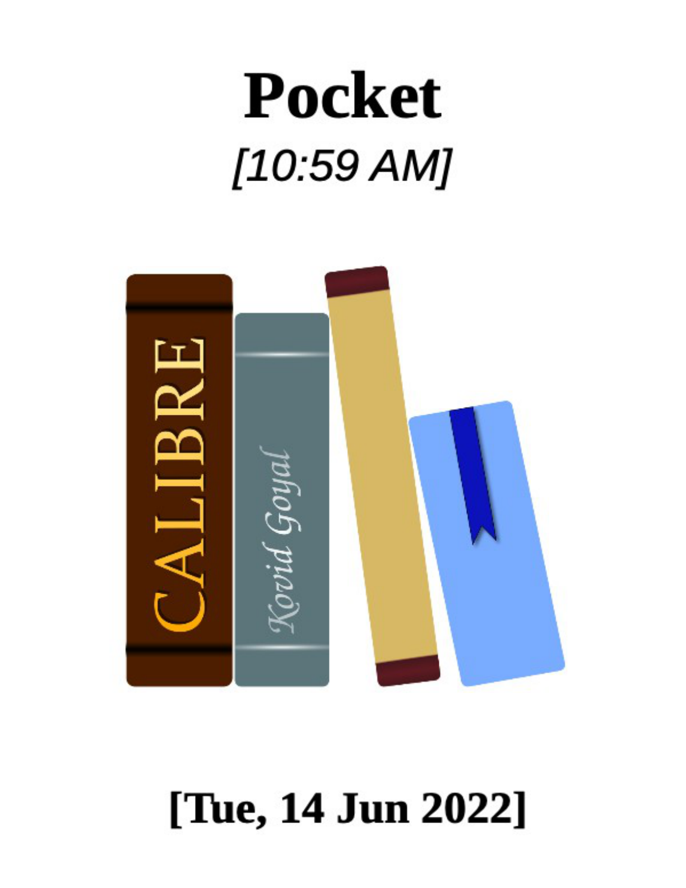

Sections
My Pocket Articles for [10:58
AM]
How the 7 Ps of Personal Power Can Help You
Find Fulfillment
Everywhere around us, people love to complain. Many vent
or whine about how unsatisfied they are with their careers,
their relationships and their overall lives. I've fallen into
these traps myself, but then I discovered seven principles to
generating success and happiness in all that I do.
Stop Splitting Yourself in Half: Seek Out Work-
Life Boundaries, Not Balance
Early in my career, I learned to split myself in half. There
was a "work Lindsay" and a "personal Lindsay," and they
were never meant to be in the same place at the same time.
The underlying notion, rampant across the business world,
is that it's somehow weak to show any signs you're a
person.
The Complete Guide to Peer Coaching
Some of the most impactful therapy sessions of my life
haven’t come from a therapy session. They didn’t involve
exchanging money, or billing insurance. In fact, they didn’t
even involve a therapist at all.
How to Earn Passive Income in DeFi
This post is a walkthrough of how you can earn “passive
income” in DeFi, inspired by a panel I am speaking on at
Consensus 2022. For regular readers, it may be more intro-
level than usual, though maybe you know someone who
could benefit from this!

Zero-COVID and Free Speech
Barely a week after the Chinese Communist party declared
victory in its struggle to protect Shanghai from coronavirus,
half of the financial hub’s districts will be shuttered this
weekend to test millions of residents after signs emerged of
renewed community transmission of the virus.
3 Principles for a Better Life
This is a Mindf*ck Monthly newsletter from June 13, 2022.
Every month, I send out big ideas I’ve been chewing on in
the hopes that it makes you less of a shitty person. Let’s
dive right in.
The Six Forces That Fuel Friendship
“The Friendship Files,” my series of interviews with friends
about their friendships, began with an idle thought. Having
written a lot about both friendship and dating apps, I was
curious about Bumble BFF.
In your own time: how to live for today the
philosophical way
Arguably the most useless observation ever made by an
ancient Greek philosopher – putting aside, for now,
Pythagoras’s theory that fava beans contained the souls of
the dead – was Epicurus’s argument that we shouldn’t fear
death, because we won’t be around when it happens.
Misdirection, Fake News and Lies: The Best
Books to Read on Disinformation
The phenomenon has undermined our trust in electoral
systems, in vaccines — and in what happened at the U.S.
Capitol on Jan. 6. Here are books on its history, techniques
and effects.

‘AI’ Shopping Startup Exaggerated Tech
Capabilities to Potential Investors
Some startups are bold and original. And some, like Nate,
had more modest goals: automatically filling out shoppers’
contact and payment information on retailers’ websites. In
exchange for sparing them a minute or two of data entry on
their phones, Nate charged shoppers $1 per transaction.
Luxury E-Commerce: Crash or Correction?
Just a year ago, luxury dotcom valuations were flying high.
Farfetch was trading on a forward sales multiple
approaching 12.
Retailers combat global economic headwinds
More on this: Economies around the world are struggling to
fight back against the array of challenges before them. The
risk of inflation: The range of global challenges, along with
the US Federal Reserve’s attempts to combat rising inflation
in the US, is increasing the risk of inflation.
Swelling returns force retailers to rethink the
shopping experience
An expensive business: The survey also highlights how
costly returns are for merchants: For every $1 billion in
sales, retailers see $166 million in returns, on average. On
top of that, for every $100 of returned merchandise, they
lose $10.30 to fraud.
How Shein Gatecrashed Fashion’s
Sustainability Show
This week, fashion’s sustainability power players gathered
in Copenhagen for the industry’s premier event focused on
tackling its environmental and social impact.

What do values-driven consumers care about?
Purpose is more likely to be a tiebreaker, according to Drew
Train, co-founder and CEO of Oberland, which bills itself as a
purpose-driven advertising agency.
MicroStrategy plunges 26% after bitcoin
meltdown pushes crypto market cap below $1
trillion
MicroStrategy stock fell as much as 26% on Monday amid
an ongoing meltdown in cryptocurrencies that has erased
hundreds of billions of dollars in market value.
Crop Circles Were Made by Supernatural
Forces. Named Doug and Dave.
Intricate patterns carved in fields across England in the
1980s were a viral phenomenon long before the internet fed
us such prankster curiosities daily.
Stoic Bundle
Designed to help the dedicated Stoic practitioner live a
more virtuous life. Complete Stoic Life Operating System
including a Stoic dashboard as well as more than +25
different templates designed for an easier life. Learn more...
Author Talks: How to build a damn good
business
Business guidance can hinge on an assumption of existing
financial access, making the advice irrelevant to budding
entrepreneurs with less privilege. Kathryn Finney seeks to
level the playing field.
NBA Floor Cleaners Make More Money Than You
Might Think
Jun. 10 2022, Published 3:05 p.m. ET A viral tweet revealed
that NBA floor cleaners make a decent living. How much do
these floor cleaners and sweepers get paid? The answer
might surprise you.

Skin’s Inaugural Men’s Line Centered on Comfy
Basics
It took Skin nearly 20 years, but the popular women’s
lingerie, apparel and accessories brand is finally taking the
plunge into menswear. The luxury brand founded by Susan
Beischel in 2003 has amassed a celebrity following that
includes Meghan Markle and Oprah Winfrey.
Coffee vs Tea vs Soft Drinks: What Caffeine
Drinks Do Countries Prefer?
Coffee, tea, or soft drinks… How do you get your caffeine
fix? It might be the world’s most widely consumed
psychoactive substance, but your preferred caffeine drink of
choice might come down to where you live.
New York City Is a Lot Safer Than Small-Town
America
Since the summer of 2020 the United States has been
experiencing a deadly wave of violence, and New York City
has not been immune. The number of homicides in the city
shot up 47% in 2020, and rose another 4% last year.
Unity’s CEO wants to power the TikTok of the
metaverse
Stellar Development Foundation, which supports the Stellar
Network, has come up with a way to address the problem.
Twitter vowed to change its world leaders
policy. Then came Elon.
“Many data architectures can benefit from a table format,
and in my view, #ApacheIceberg is the one to choose - it's
(actually) open, has a vibrant and growing ecosystem, and
is designed for interoperability,” he wrote in a January
LinkedIn post. He didn’t have to mention Delta Lake by
name.

Inflation's 'Fun' Period Was Way Too Brief
Consumer confidence has tanked, with the University of
Michigan’s widely followed sentiment index at its lowest
since 2011. This is incongruous with the fact that the labor
market is very hot.
Black representation in the beauty industry
Black beauty consumers and brands face deep challenges
when it comes to equity. Removing those barriers can lead
to greater opportunity for everyone in the industry.
Gen Z, Millennials and Gen X All Basically Agree
on WFH
During the early days of the pandemic, the narrative was
that remote-working was a grind for younger workers stuck
in cramped apartments and bliss for their seniors living it up
in airy home offices.
Charted: The Global Decline of Fertility Rates
Over the last 50 years, fertility rates have dropped
drastically around the world. In 1952, the average global
family had five children—now, they have less than three.
Explainer: What Key Factors Influence Gas
Prices?
Across the United States, the cost of gas has been a hot
topic of conversation lately, as prices reach record-breaking
highs. The national average now sits at $5.00 per gallon,
and by the end of summer, this figure could grow to $6 per
gallon, according to estimates by JPMorgan.
How Close Are We Really to 1970s-Style
Inflation?
Inflation has come to dominate dinner table discussions as
the price of food, energy, housing and almost everything
else Americans deal with on a daily basis vault higher. In
May, it climbed to its highest level since 1981, rising 8.

Products Are Functions
Products are easier to reason about when you think of them
as functions. They transform an input situation into an
output situation. This lets you describe what the product
does as a transformation of the user's circumstance instead
of a bundle of features.
A Glass Essay
In the last week of june 2018, I got unexpectedly dumped.
During the month that followed, I did the only thing that felt
right: I read Anne Carson’s long poem “The Glass Essay”
every day.
Remaining Ambitious
We tend to see ambition like a personality trait. We describe
people as ambitious, or not, as if it were a fixed property of
their being. But the reality is that it ebbs and flows. You can
become more ambitious over time as you learn what you
are capable of, and as encouraging peers push you along.
The Deep South’s Dames of Dildos
Waffle Houses, dollar stores and pawn shop billboards line
the interstate as I ride the lumbering Greyhound into
Florence, Alabama. The artsy coffee shop with dangling
Edison light bulbs is the sole indication this is a college
town.
The Six Forces That Fuel Friendship
“The Friendship Files,” my series of interviews with friends
about their friendships, began with an idle thought. Having
written a lot about both friendship and dating apps, I was
curious about Bumble BFF.

Key tech takeaways from the Era of Uncertainty
report
Insider Intelligence’s Era of Uncertainty report dissects the
effects of 2022’s various issues, including fallout for Big
Tech companies, broken supply chains, war, and inflation.
We look at the ramifications for the technology sector.
Scrawl
Scrawl is a simple command line tool for downloading files
referenced on websites using CSS selectors. This application
is not meant to be a replacement for curl or Wget, but
rather a precision tool for grabbing files when the context in
which they are presented is known to.
Projects
I work on open source projects during my free time. Some
applications were developed in response to specific needs,
others for fun alone. I primarily use and develop for Linux,
but aim for cross-platform compatibility when possible. Most
of my work is available on GitHub.
PDF to notes
PDF file (can be multiple): select file(s) to convert. Deck:
Which deck the added note(s) will be inserted into. Note
type: Which note type to use for insertion, supports
"normal" (front/back) note types as well as cloze note types.
Butler-Addon
As add-ons are programs downloaded from the internet,
they are potentially malicious. You should only download
add-ons you trust. If you were linked to this page from the
internet, please open Anki on your computer, go to the Tools
menu and then Add-ons>Browse & Install to paste in the
code.

Cloze Overlapper
Download The add-on author has not uploaded a version of
this add-on compatible with Anki 2.1. Old add-ons for Anki
2.0 can be downloaded from the archive. All Anki 2.1.
Progress Bar
As add-ons are programs downloaded from the internet,
they are potentially malicious. You should only download
add-ons you trust. If you were linked to this page from the
internet, please open Anki on your computer, go to the Tools
menu and then Add-ons>Browse & Install to paste in the
code.
Anki Simulator
As add-ons are programs downloaded from the internet,
they are potentially malicious. You should only download
add-ons you trust. If you were linked to this page from the
internet, please open Anki on your computer, go to the Tools
menu and then Add-ons>Browse & Install to paste in the
code.
Searching, PDF Reading & Note-Taking in Add
Dialog
As add-ons are programs downloaded from the internet,
they are potentially malicious. You should only download
add-ons you trust. If you were linked to this page from the
internet, please open Anki on your computer, go to the Tools
menu and then Add-ons>Browse & Install to paste in the
code.

‘They have shattered barriers’: On Wall Street,
the new biggest private equity firms are run by
Black and Latino billionaires, and people of
color.
In February, private equity firm Clearlake Capital Group
purchased Endurance International for $3 billion and
merged it with Web.com, which had been bought for $2
billion by another private equity firm, Siris Capital.
Effective learning: Twenty rules of formulating
knowledge
The speed of learning will depend on the way you formulate
the material. The same material can be learned many times
faster if well formulated! The difference in speed can be
stunning! The rules are listed in the order of importance.
11 New Ecommerce Books for Summer 2022
Here’s a batch of new ecommerce books for summer. There
are titles on sales conversions, brand development, social
media marketing, gaming, audience attentiveness, and
selling a business. I compiled this list using Amazon. From
Amazon’s “Books” category, I selected “Business & Money.
Headless eCommerce- An Epic eCommerce
Approach
Headless eCommerce allows businesses to use different
channels and systems to power their online stores. If you’re
looking for an eCommerce platform that gives you more
control and flexibility, then you should consider an
eCommerce solution.
Sections


These seven practices will help you immediately take more
control over your life, and feel happier and in control as you
do it.
By Amy M Chambers June 10, 2022
Opinions expressed by
Entrepreneur
contributors are their
own.
Everywhere around us, people love to complain. Many vent
or whine about how unsatisfied they are with their careers,
their relationships and their overall lives.
I've fallen into these traps myself, but then I discovered
seven principles to generating success and happiness in all
that I do. They haven't failed me yet.
1. Purpose
Truly successful people get up and start each day filled with
purpose. They visualize an imagined future state for their
work or their life that's different than today. Then, they get
to work on creating it or bringing it about — not waiting for
it to happen.
People with purpose know what they want out of life. They
know who they want to become. One of the best ways
detect your purpose is to create a vision board, mission
statement, or list of values — then commit to bringing those
things to life. This ensures you stay proactive instead of
reactive.
Related: 6 Timeless Strategies That Drive Successful
Entrepreneurship
2. Plan

Once you find our purpose, it's critical that you align your
time with what matters most to you. Fulfilled people create
a high degree of congruence between what they say and
what they do. Truly happy people take action towards their
imagined end goal every day.
If your purpose statements are about your relationships with
family, fitness and progression at work, but you don't
consistently take steps towards those things, you'll naturally
feel unhappy and dissatisfied with life. I've found that long-
term consistency trumps short-term intensity. Taking the
time to plan your week in advance with the help of a
planner or calendar has been essential for me. Without
planning for your most important life activities, it's easy to
let daily distractions and interruptions derail you constantly.
Having a plan in advance — and sticking to it — ensures
that you maintain control over your day, versus the other
way around.
3. Passion
Many of us are motivated at three different levels. At the
lowest level, fear: We do things because we're afraid of what
might happen if we don't. The second lowest level is duty
(or obligation): We do things because we feel we should.
The highest level of motivation is love (or passion): Instead
of feeling like we must act or ought to act, we do things
because we want to.
Since the third kind of motivation is intrinsic instead of
extrinsic, it tends to be a much easier form of motivation to
maintain. My father taught me at a young age to find a job
that didn't feel like work. In other words: Don't do anything
you're not passionate about. We tend to feel happiest when
we spend our lives doing things we love. Spending our time

doing things we don't feel passionate about often leads to
burnout. Jobs we love give us energy, and jobs we hate take
energy from us. Having a job we love isn't something for a
chosen few — it's attainable for any of us.
Related: The Road to Happiness Isn't What You Think
It Is
4. Practice
This is all about simply putting the hours in. We often like to
look at celebrities and believe that they possess something
that we don't. We'll say things like: "They were born with it,"
or "They just got lucky."
I believe that we like to tell ourselves these stories because
it lets us off the hook for not doing things we don't want to
do. But, the reality is that most successful people didn't just
get lucky — most dedicated a lot of effort and time into
perfecting their craft. Several NBA stars shoot 100 perfect
free throws consecutively before they leave practice. Why
are we so afraid to simply put the hours in? Often, it's
because society teaches us that things should be "easy."
The truth is there's no shortcut to success — it requires tons
of practice, and if we want a great life, we must be willing to
work at it. This means being willing to fail, make mistakes
and learn from those mistakes.
5. Presence
It's been said that two things prevent us from happiness:
living in the past and observing others. I've found that
focusing primarily on the present and only on what we
ourselves can control is an incredible driver of results.
Between every stimulus and response, there is a space. In
that space is a choice. I've found that when we choose to
focus on only what we can control, not the things we can't,
we can stay better connected to the present moment — and
that's where all our power lies. All too often we spend time
focusing on things we can't control: other people, traffic, the
weather, the past. This rarely does us any good. Stay
focused on the present moment and yourself, and you will
immediately be more powerful.
Related: 5 Ways to Be More Strategic and Successful
in 2021
6. Pain
It's true that pain is inevitable, but all too often, we fail to
notice that pain doesn't mean we must suffer. What matters
most isn't what happens to us — it's how we choose to
respond to what happens to us. Even when we can't control
our circumstances, we can always control how we feel about
it.
Life is hard, but we can all do hard things. As we set out to
do hard things, it's so important that we're aware of our
subconscious minds, which can accidentally sabotage us.
Our subconscious minds, because they're so programed to
protect us, often try to dupe us into believing that hard
things are scary and should be avoided. The most
meaningful things in life often come at a price, and can be
difficult. Problems arise when we expect things to be easy —
but when we find the courage to lean into pain, amazing
things happen. When we accept pain is part of the journey,
we fare better.
7. Positivity
Staying positive can be hard, especially during tough times.
Bad things happen to all of us, and the road to success can
be long. It's often littered with difficult challenges. What you
do in moments like these, and how you think about
challenge (and yourself) will define you. Embracing struggle,
hard work, setbacks and unforeseen events in stride and
choosing to see those things as learning opportunities not
only means you're more likely to be successful, it means
you're more likely to enjoy yourself along the way.
These seven Ps have become a part of my daily regimen,
and as they have, I've created much greater success. While
practicing the power of these seven Ps, I became a
marathon runner, a COO, a skier, started my own business,
bought my dream home and found the right relationship. I
promise that these Ps can transform any area of your life.
Entrepreneur Editors' Picks
The concept of work-life balance asks us to exist as two
separate people: a work self and a life self. Instead, leaders
should seek out and support boundaries that embrace,
preserve and nurture the whole self at work.
By Lindsay Tjepkema June 10, 2022
Opinions expressed by
Entrepreneur
contributors are their
own.
Early in my career, I learned to split myself in half. There
was a "work Lindsay" and a "personal Lindsay," and they
were never meant to be in the same place at the same time.
The underlying notion, rampant across the business world,
is that it's somehow weak to show any signs you're a
person. Better to turn off those personal matters, even if
they're as simple as needing to go home and cook dinner or
as mundane as the consequences of spilling coffee on your
blouse before a meeting. It all had to stay where it
belonged: the personal side and the business side. I was
supposed to be chasing the much-discussed work-life
balance, constantly trying to force these two sides to be
equal. I ended up ignoring my whole self as a result.
Then a transition point in my life changed my perspective. I
was changing jobs, before I started Casted, and I'd just read
a book that got me thinking about priorities:
Essentialism:
The Disciplined Pursuit of Less
by Greg McKeown. In the
book, McKeown characterizes essentialism as "the relentless
pursuit of less but better," a disciplined approach that asks
us to sort the "trivial many" from the "vital few" as we
choose where we will focus our energy and effort. That
perspective spoke to me — the answer wasn't a
transactional notion of hours at my desk or away from my
desk — I needed to consciously identify what mattered most
to me and take control of my time and attention.
I realized something crucial: No one was going to come to
me and say "You should probably work less," or "Don't
respond to your emails tonight." Those nudges may happen
more now in companies, but work will always fill the cup you
give it. As I transitioned into the new job, I had an
opportunity to try to put my new perspective into practice.
My focus shifted away from the dichotomy of a work-life
balance and toward the idea of boundaries around my
priorities, my "vital few."
As I kept working through my perspective on this, I
experienced two more life-changing milestones. First, I
started working with my executive coach, who helped me
understand that business is human. The pursuit of a work-
life balance had taken the humanity out of my work. She
showed me how ridiculous it was to think your personal life
wouldn't impact your work life and vice versa. The second
milestone was starting Casted and stepping into the role of
CEO and co-founder. Those milestones led me to a
realization: The pursuit of work-life balance is a myth. I seek
out boundaries that preserve and nurture my whole self.
Related: 10 Myths About Work-Life Balance and What
to Do Instead
Boundaries support the whole self
What makes boundaries different from balance? Balance
implies two things that aren't equal that you're constantly
trying to make equal. It creates the expectation of a clear-
cut division. A work-life balance fails to acknowledge that
you are a whole person, and sometimes things can be out of
balance without anything being wrong. Sometimes you'll
spend days, weeks and even whole seasons of life choosing
to lean more into one part of your life than the other.
Boundaries ask you to think about what's important to you,
what drives you, and what authenticity looks like for you.
Boundaries require self-awareness and self-reflection, along
with a willingness and ability to prioritize. Those qualities
help you to be more aware and more capable of making
decisions at a given moment. By establishing boundaries
grounded in your priorities, you're more equipped to make
choices. Boundaries empower you to say, "This is what I'm
choosing right now. I need to be fully here until this is done."
Boundaries aren't static, either. They demand that you
reevaluate priorities, consider different contexts and have
those short and important conversations with yourself
before you enter a situation or take up a task. Is this where I
need to be right now? Does this align with my priorities? Is it
the right thing for all of me?
So here I was, new to the role of CEO and thinking about
how to put the human back in business. In starting Casted, I
brought those ideas with me from the beginning, as I
aspired to build a culture that lets people bring their whole
selves to work. My hope for my employees is that they're
doing something they love so much that they take who they
are at work home, too. Not the sending of emails or their
attendance in meetings, but the complex person they are all
the time, transcending those distinctions.
Here are three ways I approach leadership as I encourage
our team to bring their whole selves to work:
1. Don't assume you know what being
human means to everyone
I make a conscious effort to remember that others come to
Casted with different personal and professional experiences
and backgrounds than my own. I don't assume that I know
what being human means to my team members when I ask
them to be themselves at work. I have three kids and a
husband, and I live in the suburbs. And by the way, I'm a
heterosexual, white, 39-year-old woman. That's me, but it's
not everyone. I do my best not to assume that I know how
my team members have shaped their priorities or what they
need to thrive.
It goes back to another discussion I recently had with my
team — the difference between a four-day workweek with
Fridays off, whether or not it's helpful to them, versus a truly
flexible schedule that respects the needs of employees and
trusts them to do their work
and
live their lives. I don"t want
to offer "perks" that only
appear
helpful. I want to support
them as they bring their whole selves to work, and I want to
create an environment that offers the psychological safety
for each employee to be human here in all their unique
ways.
Related: Why We All Need to Give Up on Work-Life
Balance Once and for All
2. When you ask people to show up
as themselves, be careful not to ask
them to show up as you
Inviting your employees to come to work as themselves fully
— not split in half and hiding their humanity — can be
freeing. As a leader, though, you have to be careful not to
imply they should show up as you. You know what I mean,
because you've likely read about (or been part of) a
company where all the employees felt obligated to emulate
a CEO with a powerful personality. They're still stuck walking
a balance beam of expectations, trying to show up the way
they think you want them to.
Here's the thing: I want more voices in the room, not just
mine echoing back at me. I want the full experience of who
my employees are so we keep growing, changing and
getting better with more seats at the table. But even with
the best of intentions, leaders need someone checking to
make sure a passionate CEO modeling the qualities of
showing up as themselves doesn't send a message that
says: "Be more like me when you're here."
3. Lead by example
I want to be true and honest with those around me about
who I am and what I'm here for, including my kids, friends,
employees, partners and even my board. Part of leading by
example is sharing in both directions: My kids understand
that I like and care about my work. They're building this with
me, so I don't shy away from explaining business language
or answering questions. One of my sons is very interested,
because I let him in on it instead of drawing a firm line
between work and life. My kids know when I take an
important call, I'm not choosing work over them. At the
same time, my team and board and customers know when
I'm going on vacation with my family or when I take a call
with my boys in the car. They understand that time with my
family fuels my work, too.
As I share, I work to ensure I'm helping build a safe space,
not creating an environment where people feel forced to
reveal anything. And I'm conscious of the line between
demonstrating vulnerability and oversharing at the risk of
hurting my team's confidence in me.
Being you wherever you are is so simple, but for some
reason, it's not easy. We've made it hard. We've drawn lines
and asked people to hide their humanity. I'm building
something bigger than a business, and it's going to take all
of me, knowing myself and my priorities, and no longer
chained to the battle for balance.
Related: Work-Life Balance Is B.S. -- Here Are 6 Ways
to Regain Your Sanity.
Entrepreneur Editors' Picks

♥ 29
Listen
Sponsored By: Minimal
Focus is your most valuable asset. You deserve to use tools
that respect it. Introducing Minimal - the notes and writing
app designed for focus.
• The first and only meditation-inspired writing app.
• Lets notes die with the Note Lifetime for a clean, organized
mind.
• Write collaboratively in a silent space.

Join thousands of focused, thoughtful writers by downloading
Minimal on the App Store.
Download Minimal
Want to hide ads? Become a subscriber
Some of the most impactful therapy sessions of my life
haven’t come from a therapy session. They didn’t involve
exchanging money, or billing insurance. In fact, they didn’t
even involve a therapist at all.
Instead, they were part of a peer coaching practice that I’ve
been doing for 2.5 years with my friend (and co-author of
this piece), Casey Rosengren.
We’ve explored everything from tactical business issues, to
major career decisions, to romantic relationships. I’ve felt
almost every emotion imaginable in our sessions, and made
major changes in my life and my business because of the
work we’ve done together. He has too.
We invented this peer coaching format together by accident,
and it has been extraordinarily useful to both of us. We think
it could be helpful to a lot of other people, especially
otherwise high-functioning, ambitious people who want to
experiment with creating more support for themselves to
work through issues in their work and their lives.
This article is a guide to the peer coaching practice we’ve
been doing together. We’ll take you step by step through
how it works, and how to do it. But first, let’s talk about why
we think it actually works.

Why Peer Coaching
There’s a strong norm in therapy, rooted in the historical
development of talk therapy, that you shouldn’t know much
about your therapist—and you definitely shouldn’t be
personal friends with them.
This comes primarily from its theory of change: therapists
are supposed to be a blank canvas of positive regard, and
it’s set up this way so that you can transfer the way you
relate to other people in your life onto your relationship with
your therapist. This allows you to understand your own
patterns and have corrective learning experiences that might
help you change.
There is a science and an art to therapy. There is a reason
therapists are licensed professionals that need to go to
school for many years to practice. For many problems and
people, seeing an actual therapist is crucially important and
not at all replaceable by peer support or coaching. Casey
and I both see actual therapists in addition to doing peer
coaching with each other.
But still, for certain kinds of problems and certain kinds of
people, the definition of what “therapy” is and who can
perform it is a little narrow. Most meta-analyses find that
your connection with your therapist (the so-called
therapeutic alliance) is the number one predictor of
successful outcomes.
Given that the alliance is so crucial, we believe that with a
certain type of friend and a simple set of practices aimed at
building and maintaining a safe connection, it is very
possible to create a healthy space to feel supported and
create growth for yourself–both personally and

professionally–without payment and without a formal
therapy relationship.
We believe this because we’ve done it.
Moreover, we think making this kind of experience more
common is crucially important because therapy and
coaching is so valuable for so many people, but it tends to
be expensive, and finding someone you like is really hard.
If you’re dealing with clinically significant issues in your life,
peer coaching is probably not your best route to get help.
But if you’re a founder, operator, or investor looking to
better navigate the challenges you’re facing at work, and
would like to develop a closer bond with someone else who’s
looking for the same thing—peer coaching can be a massive
upgrade to your week.
So what is peer coaching and how can you implement it in
your own life? Let us explain.
What is peer coaching
Peer coaching is a structured way to learn, grow, and share
with a close friend. It’s a deep commitment to creating a
supportive environment where you and a friend can develop
as individuals.
The bare bones structure of it is to meet weekly for an hour,
with one person as the “coach” and the other as the “focus
person,” and to alternate each week who is in each role. The
focus person shares whatever questions or challenges
they’re sitting with, and the coach’s job is to listen, and at
times, reflect or share their own experience.
While Casey and I both have a deep interest in psychology
and some training in active listening skills, we believe that

the structure we’ve created is simple enough that it can be
utilized by almost anyone, so long as they’re willing to learn
and follow a few guidelines for creating a safe container.
What you can get out of it
You can expect to get a bundle of three things from peer
coaching:
Accountability
Tactical and strategic advice
A place to process what's on your mind, and to feel seen,
listened to, and understood
Most founders and operators come to coaching or therapy
looking for tactics and accountability. They want to know how
to deal with a specific co-worker, or growth problem, or
fundraising situation.
You can definitely get this out of peer coaching at a much
lower cost than the $2,500 / hour you might spend on an
executive coach. You’re likely to be a step or two ahead of
your peer coach in one domain or set of problems, and a
step or two behind in another. In these situations tactics and
advice are incredibly helpful.
But we think the main function of peer coaching is actually to
provide the third thing: a place to process what’s on your
mind and a feeling of being seen and listened to. We have
found that only when that feeling is present is it possible for
the coach to give advice or create accountability in a way
that feels good.
The reason for that goes back to something we mentioned
up top: therapy is effective to the extent that there is a

strong therapeutic alliance. The task of a peer coach is first
and foremost to create and maintain that alliance.
Advice-giving and accountability—as well intentioned as they
might be—can create ruptures if the person being coached
isn’t ready to receive them, or doesn’t feel like they’ve been
fully heard.
There’s a term in the therapy world, popularized by Carl
Rogers, called
unconditional positive regard
—which basically
means it’s the therapist’s job to be understanding and be
accepting of their client, to listen carefully to them, and also
to be the bearer of hope that they can work through their
problems and learn to change.
This, we think, is the bedrock of peer coaching. The tactical
advice and accountability is kind of the cherry on top.
There are so many anecdotes about how lonely it is to be a
founder, but there are not many suggestions for how to
alleviate this loneliness. It might be obvious, but in our
experience the best way to address loneliness is to connect
with others who have gone through similar circumstances.
Peer coaching is a great way to do this.
How to do peer coaching
Finding your partner
Learn more
This post is for
paying subscribers

Subscribe →
Or, login.
Thanks to our Sponsor: Minimal
Minimal is the first and only meditation-inspired writing app.
With focus as its ultimate priority, Minimal delivers a simple,
clutter-free space to think, write, collaborate, and publish.
Minimal's most ground-breaking feature is the Note Lifetime,
making your notes app ever-fresh, organized, and reflective
of the present moment.
Download Minimal
Want to hide ads? Become a subscriber
Read this next:


♥ 12
Listen
This post is a walkthrough of how you can earn “passive
income” in DeFi, inspired by a panel I am speaking on at
Consensus 2022. For regular readers, it may be more intro-
level than usual, though maybe you know someone who
could benefit from this!
For Consensus newcomers, welcome! I publish a crypto
article almost every Friday, often focused on tokenomics,
DeFi, or gaming.
Let’s start with the important caveat: there is very little
“passive income” in DeFi. Passive income suggests you have
built some product or business which can generate profit for
you with minimal or zero continuing effort on your part.

Unless you write a smart contract that charges fees that are
paid to you, or sell an NFT with royalties that keep accruing
to you, most returns in DeFi are not really passive income.
They’re better understood as “yield.” Returns on your assets
that you are putting to work in the DeFi ecosystem, either to
help another platform function better or to simply take
advantage of free tokens that are being kicked off.
The core difference is that passive income is something you
could accrue without an existing amount of capital. But if you
want “passive income” in DeFi, you almost always need
some amount of crypto assets you’re willing to put at risk.
Those assets are what earn you your yield.
As I explained in “How are DeFi Yields so High?” The sources
of yield vary. Some are dividends of profitable crypto
businesses. Some are the fees you’re earning for helping
provide a service. Others are completely unsustainable free
money faucets, the amped-up crypto equivalent of VC-
subsidized Uber rides.
But regardless of where they’re coming from, there is free
money out there for those who want to claim it. You just have
to know where to look, and how much risk you’re willing to
take.
Through the rest of this post, I’ll explain some of the safer
easier ways you can earn passive yield on your crypto
assets. At the end, I’ll go over assessing whether or not it’s
worth it, and where some of the hidden risks are.
How to Earn Passive Yield in DeFi
There are five broad sources of passive yield in DeFi:
Lending

Trading fees
Staking
Platform incentives
Aggregation
Each can allow you to earn some passive return on your
capital at various APRs and risks, depending on your
tolerance and how much time you want to spend managing
it.
Lending (low risk, low maintenance, low yield)
The simplest way to earn yield in DeFi is to supply assets to a
borrowing platform like AAVE or Compound, and get paid a
small amount of interest from the people borrowing that
same currency from the platform.
When you deposit assets into AAVE, Compound, Rari, or
other lending protocols, you are then able to borrow other

assets against them. Deposit somet ETH, and you can borrow
USDC against it.
When you borrow USDC, you have to pay interest on it. That
interest rate varies based on the demand for borrowing
USDC, is compounded by the second, and has to be paid
whenever you pay off your debt. If you don’t pay it off or the
debt gets too high, the platform can take your collateral to
pay your debt.
When you pay interest on the USDC you’re borrowing, some
of that interest goes to the platform itself, but most of it goes
to the other users who supplied the USDC that you’re able to
borrow. So when you deposit some of your funds into these
platforms, you’ll earn a bit of interest from the other people
paying interest on borrowing those funds from the platform.
If those people default on their debt, you’re protected,
because the platform will seize their collateral and sell it to
protect your assets. And despite the many catastrophic
meltdowns in DeFi, the major lending platforms Compound
and AAVE have never had any issues for depositors.
So this is very safe, and requires no maintenance, but the
yield is very low. You’ll typically only make 2-4% on
stablecoins, and next to nothing on ETH or wBTC. You can
also read more about this strategy here.
Trading Fees

Your next option for earning some passive yield on your
assets is to supply your assets to decentralized exchanges,
so other people can trade between them and pay you a
small fee.
Think of this like lending money to the currency booth at the
airport. People want to trade between Dollars and Euros, so
you give the booth 100 USD and 100 EUR. At the end of the
day you come back, and they give you back 120 USD, 80
EUR, and an extra $4 in trading fees generated from people
swapping between the two.
You can do the same by depositing your crypto assets into
decentralized exchanges like Uniswap, Sushiswap, and
Curve. You supply the assets, people trade between them,
and every time they trade, they pay a small fee. When you

withdraw your assets, you get your share of the fees
generated, based on what percentage of the total trading
pool you contributed.
While your funds are very secure using this strategy, you do
open yourself up to impermanent loss. If you’re supplying
tokens with prices that fluctuate a lot against each other, like
ETH and USDC, you might lose money if their prices change
significantly. Thankfully the yield on supplying volatile assets
is also higher, so it can be worth it. It’s just a risk you have to
decide if you want to take.
This is reasonably safe, has minimal maintenance, and has a
highly variable yield. Typically the riskier the pair is, the
more your yield will be. You can read more about this
strategy and how it works here.
Staking

There are two kinds of staking. Real staking is when you
contribute some of your crypto assets to help secure a
crypto network, like staking your SOL to secure the Solana
network, and soon staking your ETH to secure the Ethereum
network.
In return for doing this, you earn a share of the new tokens
that are being emitted plus some share of the gas fees being
charged on the network. So it’s kind of like earning a
dividend for helping secure the network with additional
collateral and processing power.
Many projects will have “staking” but it’s just a way to get
you to lock up your tokens and not sell them by giving you
free tokens. You’re not securing a network or doing anything
particularly useful besides not selling your tokens. This is a

way to get free tokens, but you’re not really earning yield,
you’re just protecting yourself from dilution.
For real staking, you have two options. You can set up a
validating node yourself depending on what network you
want to stake tokens on, or you can just buy liquid staking
tokens from a service like Lido. By going to Lido you can
exchange your ETH for stETH, a token which earns about 4%
APR in ETH while sitting in your wallet.
It’s among the safest options, has no maintenance, and has
a low but very predictable yield. This doesn’t really require a
blog post, you can just check out Lido, Rocket Pool, or look
for other liquid staking solutions if you want to get started.
Platform Incentives
Platform incentives are where you can see the insane APRs
start to appear, as protocols gives away their tokens to
incentivize more people to use their products.
I mentioned AAVE above, and if you use AAVE on Ethereum
you are getting low predictable yield. But if you use AAVE on

Avalanche, your yields are higher, because Avalanche has
given AAVE free AVAX tokens to give away to incentivize
people to migrate funds to the Avalanche chain.
These platform incentives can often be worth moving your
funds around to different platforms to find the best yields, a
process called “yield farming.” For example, let’s say you
want to earn the highest yield on your USDC. You could pair
it with DAI and deposit the two into the Uniswap DAI/USDC
pool to earn trading fees. But Curve pays you extra CRV
tokens to deposit your stablecoins there, so it might be worth
it to deposit your funds on Curve instead.
Then even within Curve, there are different pools that will
pay you more or less CRV tokens for the same amount of
USDC. So you could rotate your funds within different pools
to maximize your yields.
Platform incentives are where you can get into an insane
amount of optimization, earn the highest yields, spend the
most time micromanaging it, and also have the highest risk
of blowup. If you want more, I have an in-depth guide to
farming with stablecoins that covers finding these
opportunities. And if you want the super degenerate yield
farms that pay out 1,000%+ APR and will probably lose you
all your money, you can go shopping on VFAT.
Aggregation

Finally, there’s aggregation, which is essentially a metalayer
on top of these other methods. Yield aggregators tap into
these other sources of yield and do the farming for you, so
you can just deposit your investment and let the aggregator
take care of the farming for you.
There are two main types of aggreagors. Autocompounders
will focus on a specific source of yield, harvest the rewards,
sell those rewards for more of the underlying tokens, then
reinvest those tokens for you. This is a process you would
otherwise have to do yourself and could incur a significant
amount of gas fees in the process, so they’re able to save
you quite a bit of time and energy.
Then the “true” aggregators collect yield from a variety of
sources to give you a blended APR that should reduce your
risk exposure while balancing out your earnings over time.
Yearn’s token vaults like for USDC and ETH take a variety of
strategies to earn yield on the assets, so you don’t have to
keep hunting for the best returns.

These aggregators are almost like democratized hedge funds
that you can deposit and withdraw funds from any time, at
any amount, and which anyone can access. They require no
maintenance, are relatively low risk, and can sometimes
have good yield. Though since they’re using the strategies
already laid out and taking a fee off the top, they will
typically pay slightly less than doing the strategies yourself.
You can read more about how they work here, and definitely
check out Yearn if you want to try using one. You can also
look for good farms to autocompound on Beefy.
Getting Started
If you want to get started with these simpler, safer methods,
here’s the easiest way. I’ll assume you have some ETH on
Coinbase or another exchange already.
1. Install MetaMask

2. Send in your ETH from Coinbase to your new Metamask
wallet
3. Go to any of the sites linked above (you’ll have the
easiest time with the AAVE or Yearn strategies)
4. Deposit your funds
5. Watch your portfolio on Zapper!
And that’s it! You’re earning passive yield. If you want to find
more platforms to experiment with, the easiest way is to go
to DefiLlama and scroll through the top projects on every
chain sorted by Total Value Locked. TVL is a decent proxy for
legitimacy, since the more money in a project the more
battle-tested it is. It’s not perfect, though. Luna had billions
in TVL.
Speaking of, let’s talk about risks quickly.
Is Passive Yield in DeFi Worth It?
When you hear “passive income” or “passive yield” you
assume it should be fairly, well, passive, right?
Most stuff in crypto fails that test. It could blow up, you have
to move things somewhat often, there are tons of risks that
go unacknowledged, and you can’t really leave it for a few
years without touching it. Except for maybe a couple of
things.
So you aren’t
really
getting passive yield the way you might
from holding a bunch of dividend-paying stocks in your
brokerage. It still requires more maintenance, and the
downside is much higher.
For example, if you put your life savings into Anchor Protocol
to earn 20% APR, you might have lost 50% of it or more

when Luna broke down. Was earning 20% worth the risk of
losing everything? Definitely not.
Despite writing about stablecoin farming in the past, I don’t
do any of it now. Even if I can get 10% on my USDC, I’d
rather have those dollars sitting in a fiat bank account
because I think that risk-adjusted rate might be higher. This
is a privilege I have by living in a country with a secure
banking system though. That calculus might be different for
someone in a developing nation.
That said, I keep a lot of my ETH in Lido’s stETH. I consider it
extremely low risk, and since I’m going to hold all that ETH
anyway, I may as well earn 4% on it. The nice thing about
stETH too is it’s extremely low maintenance. I don’t have to
do anything, it just sits in my wallet. If you want more than
4% on your ETH, there are other ways to get it.
But, you should play around yourself and decide what makes
sense for you. I’ve had plenty of fun on the more degenerate
side of DeFi as well, though I think it’s mostly lost me money.
If nothing else, experimenting and putting your money in a
few different places is a great way to get your feet wet and
see how everything works. I’d check out my Tokenomics
series too if you want help evaluating projects, and you
should also make sure they aren’t ponzis.
What did you think of this post?
Amazing Good Meh Bad
Send Privately
Your feedback has been saved anonymously. If you want it to
be attributed to you, login or sign up.
Anything else we
should know?


Explore Stratechery
Concepts
Companies
Topics
Archives
Articles
Daily Updates
Years in Review
Account
Loading
Support
Please email support@stratechery.com
Zero-COVID and Free
Speech
Posted onMonday, June 13, 2022Monday, June 13, 2022 Author
by Ben Thompson
From the Financial Times, last Thursday:
Barely a week after the Chinese Communist party declared
victory in its struggle to protect Shanghai from

coronavirus, half of the financial hub’s districts will be
shuttered this weekend to test millions of residents after
signs emerged of renewed community transmission of the
virus. China’s most populous city, which was only released
from a two-month lockdown last week, detected 11 new
infections on Thursday, six outside the city’s mass
quarantine centres. The measures will affect eight of the
financial hub’s 16 districts, including Pudong, one of the
worst-hit areas at the start of the lockdown.
Three cases were detected in the Red Rose beauty parlour
in the city centre, prompting health authorities to test
more than 90,000 people close to the salon. Only a few
days previously, the Xuhui local party body wrote a
celebratory post on the microblogging platform Weibo
hailing the salon’s reopening on June 1 for clients who had
gone weeks without a professional haircut. It said the
state-run salon’s resumption of business reflected how the
city’s “pandemic situation improved”. The post has since
been taken down.
The mass testing ended up finding 5 cases; Chaoyang district
in eastern Beijing, meanwhile, is undergoing mass testing of its
own, and schools are closed.
One of the common responses to China’s draconian efforts to
control COVID’s spread (which, notably, do not include forced
vaccination, or the use of Western vaccines), is that it doesn’t
work: SARS-CoV-2, particularly the Omicron variant, is simply
too viral. It’s worth pointing out that this response is incorrect:
China not only eventually controlled the Wuhan outbreak, and
not only kept SARS-CoV-2 out for most of 2021, but also
ultimately controlled the Shanghai outbreak as well. The fact
there were only 5 community cases over the weekend is proof
that China’s approach works!

What I think people saying this mean is something different:
either they believe the trade-offs entailed in this effort are not
worth it, or they simply can’t imagine a government locking
people in their homes for months, hauling citizens off to
centralized quarantine, separating parents and children,
entering and spraying their homes, and killing their pets. I
suspect the latter is more common, at least amongst most
Westerners: people are so used to a baseline of individual
freedom and autonomy that the very possibility of the reality
of COVID in China simply does not compute.
Taiwan and Zero-COVID
Perhaps it is not only my knowledge of China, but also my
experience living in Taiwan for nearly two decades, or more
pertinently, my experience of living in Taiwan the last two
years, that makes me much more willing to believe in the
effectiveness of China’s approach.
For most of the last two-and-a-half years Taiwan was COVID-
free; for most of 2020 that meant life went on as normal, with
no masks, everything open, etc.; the one abnormality was that
every person entering Taiwan had to quarantine (at home or in
a hotel) for 14 days. Things changed in 2021, when the Alpha
variant broke through, leading to a soft lockdown: restaurants
and schools were closed, and workplaces were strongly
encouraged to work from home; masks were instituted
everywhere, including outside, and quarantine was hotel only.
What is less known is that quarantine went beyond travelers:
anyone who was a close contact of an infected person,
including family members and co-workers, but also people who
might have had the misfortune of being in the same restaurant
at the same time as a positive case, were quarantined as well
(your location in said restaurant was ascertained by reviewing
your cellular location data).

It is this last point that, in my estimation, stopped the 2021
spread in its tracks, and kept Taiwan COVID-free until earlier
this year (I myself endured an 18-day centralized quarantine
due to testing positive at the airport). It is also, for nearly
every Westerner I have relayed this fact to, a startling
abridgment of civil liberties. The very idea that you can be
locked up for simply being in the wrong place at the wrong
time is inconceivable; that, though, is much less stringent than
China’s approach in Shanghai, including the requirement that
you need a PCR-test within the last 72 hours to even grocery
shop.
Here’s the thing: that relative reduction in stringency relative
to China is precisely why Taiwan’s containment eventually
failed; Taiwan, for most of the last month, has had the highest
case rate in the world. From the New York Times COVID
tracker:
1
Taiwan, to its credit, did not lockdown in the face of this
outbreak; I suspect the horrors of the Shanghai lockdown
served as a deterrent, particularly given Taiwan’s ongoing
struggle for international recognition and desire to distinguish

itself from China. It’s also worth noting that at the critical
moment — late March and early April — it wasn’t clear if
China’s lockdowns would work; still, even if the outcome was
clear, Taiwan — despite its willingness to violate civil liberties
to a considerably greater degree than most Western
democracies — was never willing to go as far as China. And so,
while the Chinese approach worked, it almost certainly would
not have worked in Taiwan simply because the latter wasn’t
willing to be as brutal as the former.
I am being, as best as I can, impartial about the choices here:
the important takeaway is not simply that China’s approach
did in fact work to arrest the spread of SARS-CoV-2, but also
that it was the
only
approach that worked; even Taiwan’s
approach, which was far more stringent than any Western
country would tolerate, eventually failed. Of course there were
benefits, particularly in terms of getting time to administer
vaccines, but it’s certainly worth wondering if it was all worth
it.
2
The opposite side of the spectrum were areas of America that,
after enduring a few months of (very) soft lockdown at the
beginning of the pandemic, were mostly open from the
summer of 2020 on; I have friends in parts of Wisconsin, for
example, whose kids have been in school since the fall of
2020. The price of this approach was far more deaths,
particularly amongst the elderly who have always been at far
higher risk: over 1 million Americans have died of COVID.
This isn’t the complete COVID story, though, and not simply
because there can be no honest accounting of the pandemic
until it finally sweeps China; the most effective vaccines in the
world were developed in the West, and the U.S. produced and
distributed the largest number of them. How many lives were
saved, and how much economic upheaval — which isn’t about
simply dollars and cents, but people’s livelihoods, sense of
worth, and even sanity — was avoided or reduced because of

vaccines? That must be recorded in the ledger as well, and in
this accounting the West comes out looking far stronger.
The Great Firewall
The reason to audit this accounting is that I think there is an
analogy to be drawn between COVID and the debates around
free speech that have sprung up over the last six years. Before
then, there wasn’t much of a debate about free speech: just as
the W.H.O. and C.D.C. used to maintain that lockdowns don’t
work, it used to be widely accepted that free speech was a
good thing. Moreover, it was also accepted that free speech
was not simply a legalistic limitation on government power,
but was a cultural value. I pointed out earlier this year that this
was no longer the case in elite culture; the debate around Elon
Musk buying Twitter confirmed exactly that.
To summarize, the “sophisticated” view on free speech is that
the First Amendment both restricts the government and also
protects companies who make their own moderation decisions;
this is of course correct legally, but the idea that this
distinction should be both celebrated and pushed to its limit is
new. That, by extension, means that the “rube” view on free
speech is that said principle ought to apply broadly: not only
should the government not be able to limit your speech, but
neither should Facebook or Twitter or Google. Again, this was a
widely held view not too long ago: much of the debate around
net neutrality, for example, centered on the importance of
private corporations not being allowed to treat different bits of
data differently based on what type of content they
represented.
There are, of course, philosophical arguments to be made as to
why either view is better or worse than the other; to return to
the COVID analogy, one can debate whether or not the
sacrifice of civil liberties is worth whatever deaths might be
prevented (again, with the caveat that the final accounting is

not yet complete). What I think is missing in both debates,
though, is the question of what was possible.
Go back to my point above: I strongly suspect that most
people in the West are convinced that China’s approach will
not work — even though it is! — because they simply cannot
imagine enduring or tolerating or even encountering the level
of brutality necessary for success; that is certainly true of
COVID dead-enders who still bemoan that the West isn’t doing
enough to control the spread of COVID. It is, from my
perspective, hard to imagine any of these folks accepting non-
negotiable centralized quarantine simply for being in the
wrong restaurant at the wrong time — and again, this is the
Taiwan approach that ultimately failed! They are complaining
about something that simply isn’t possible, not because their
political enemies are unwilling to do what is necessary, but
because they themselves would never tolerate it.
This, I should note, is why I have long been in strong favor of
fully opening up: while there was an argument to be made that
it was worth trying to delay outbreaks until vaccines were
widely available, by the summer of 2021 (in the U.S.) the only
possible outcome of restrictions was to make people miserable
at best, and cause economic, socio-political, and
developmental damage at worst; spread, absent a China-style
approach, was inevitable, so why invite bad outcomes when
there are no benefits?
3
I have the same questions about free speech. Once again, I
must acknowledge that China’s approach to free speech works,
at least in terms of its leaders’ immediate goals. In other
words, it doesn’t exist, even — especially! — on the Internet.
This — like China’s insistence on zero-COVID — was something
that Westerners scoffed at as being unrealistic; then-President
Bill Clinton said upon the establishment of Permanent Normal
Trade Relations with China:

In the new century, liberty will spread by cell phone and
cable modem. In the past year, the number of Internet
addresses in China has more than quadrupled, from 2
million to 9 million. This year the number is expected to
grow to over 20 million. When China joins the W.T.O., by
2005 it will eliminate tariffs on information technology
products, making the tools of communication even
cheaper, better, and more widely available. We know how
much the Internet has changed America, and we are
already an open society. Imagine how much it could
change China.
Now there’s no question China has been trying to crack
down on the Internet. Good luck! That’s sort of like trying
to nail jello to the wall. But I would argue to you that their
effort to do that just proves how real these changes are
and how much they threaten the status quo. It’s not an
argument for slowing down the effort to bring China into
the world, it’s an argument for accelerating that effort. In
the knowledge economy, economic innovation and political
empowerment, whether anyone likes it or not, will
inevitably go hand in hand.
Clinton, along with nearly all of the Western intelligentsia,
underrated China’s willingness to do whatever it took to build a
mold around that jello, from building the Great Firewall to
employing countless numbers of censors to tanking its entire
IT sector once it felt it was becoming too politically powerful.
The end result is a populace that not only has little idea about
today’s reality — i.e. that most people have had COVID, and
are fine, and are living normally — but even less idea about
the past.
Tank Cake
Last February Time Magazine named Li Jiaqi one of its “Next
Top 100 Most Influential People”. Li’s nickname was the

“lipstick king”, which refers to the time in 2018 when the live-
streaming e-commerce peddler sold 15,000 lipsticks in 5
minutes; last fall Li sold $1.7 billion worth of goods in 12 hours.
Ten days ago, on June 3, Li was doing what he does best —
selling goods via live-streaming — when his stream suddenly
went off the air; Li, within a matter of hours, was suddenly off
of the Internet, no longer appearing on Taobao, Alibaba’s e-
commerce platform that streamed his show. The BBC
explained what happened:
Last Friday night, Li was mid-way through his popular
livestream show when it ended abruptly. The 30-year-old,
known for his smooth voice and K-pop idol looks, had just
shown his audience a vanilla log cake while selling snacks.
The cake resembled a tank: it had Oreos for wheels and a
wafer pipe resembling a cannon. And Li’s show was on 3
June, the eve of the 33rd anniversary of the Tiananmen
Square massacre…

Generations of Chinese have grown up without learning of
the massacre – and many of those millennials and Gen Z-
ers appeared to be among Li’s audience on Friday and in
the days after. Li failed to return to his livestreaming show
after the transmission was cut. Shortly after, he posted on
his Weibo account saying he had merely faced technical
issues. But his continued absence – he has missed three
shows so far during one of the year’s biggest online
shopping festivals – has only fuelled more questions and
debate. Some have cottoned on quickly as to why he was

censored, while others are having a revelation. “What does
the tank mean?” a confused viewer asked. Another said:
“What could possibly be the wrong thing to say while
selling snacks?”
That’s not all, though: it seems almost certain that Li had no
idea he did anything wrong, or why.
Few online believe that Li was trying to make a political
statement. Given his celebrity status, he knew how to
navigate political sensitivities and to steer clear of
minefields, they said. And he had never expressed political
beliefs before. Some even argued that he was possibly
among those who didn’t know about the Tiananmen
Square massacre.
Many of his loyal fans also wondered if the top
livestreamer had been set up by competitors to take a
political fall, and perhaps the cake was sneaked into the
line-up of his show on Friday. A clip circulating on social
media, apparently of the moment before the cake is
brought out, also shows Li expressing surprise over the
announcement of a tank product. A male assistant
announces in the background that the team has a tank-
shaped good to sell. Li laughs and says: “What? A tank?”
His co-presenter then says: “Let’s see if Li Jiaqi and I will
still be here at 11pm.” They were taken off air shortly after
9pm.
Many fans suspect purposeful sabotage; perhaps that is a
conspiracy theory, but said theory is undergirded by the reality
that it is not just possible but even probable that a 30 year-old
in China has no idea that selling a tank-shaped cake on June
3rd is grounds for being disappeared. To put it another way,
China’s control of information is not unlike its control of COVID:
it seems impossible, and the means intolerable, but that is
simply because we in the West can’t imagine the limitations on
personal freedom necessary to make it viable.

Acceptance and Competition
To further expand on this point: if people in the West would not
accept truly strict lockdowns, then they certainly wouldn’t
accept centralized quarantine (which didn’t work), which
means they absolutely wouldn’t accept forced testing and the
inability to leave your house for months. Ergo, people in the
West would never accept the reality of zero-COVID, which is
why it makes sense to go in the opposite direction: open up,
and forgo the massive costs of zero-COVID as well. Don’t get
stuck in the middle, enduring the worst outcomes of both.
Similarly, if people in the U.S. would not accept any
government infringement on speech, then they certainly
wouldn’t accept ISP-level censorship like the Great Firewall,
which means they absolutely wouldn’t accept forced
disappearances for selling the wrong cake. Ergo, people in the
U.S. would never accept the reality of true control of speech,
which is why it makes sense to go in the opposite direction:
embrace free speech not just as a law but as a cultural more,
and forgo the massive costs of half-ass speech restrictions as
well. Don’t get stuck in the middle, enduring the worst
outcomes of both.
COVID, alas, seems to have been a worst case scenario in
terms of both points: we suffered the aforementioned
economic, socio-political, and development damage associated
with strict control, while controlling nothing; meanwhile private
platforms went overboard in controlling information, and ended
up only deepening the suspicion of skeptics about COVID and
its vaccines, leading to many more deaths, but also increased
skepticism about vaccines generally.
The worry is that this middling approach, where we get the
worst of both worlds, impacts innovation generally; China is
increasingly focused on a top-down approach to technological
innovation in particular, placing heavy emphasis and tons of

money on catching up in areas like semiconductors and AI. The
best response is to go in the opposite direction, and let a
thousand flowers bloom, trusting that innovation by definition
arises in places we least expect it.
To put it another way, if we could accurately eliminate bad
ideas, then there would, by definition, be no more good ideas
to discover; the way to compete with China is to lean into the
fact that there remains so much we don’t yet know.
You likely have, by this point, heard the story of Katalin Karikó;
from Stat News in 2020:
Before messenger RNA was a multibillion-dollar idea, it was
a scientific backwater. And for the Hungarian-born scientist
behind a key mRNA discovery, it was a career dead-end.
Katalin Karikó spent the 1990s collecting rejections. Her
work, attempting to harness the power of mRNA to fight
disease, was too far-fetched for government grants,
corporate funding, and even support from her own
colleagues…By 1995, after six years on the faculty at the
University of Pennsylvania, Karikó got demoted. She had
been on the path to full professorship, but with no money
coming in to support her work on mRNA, her bosses saw
no point in pressing on.
Karikó would eventually figure out how to stop the body from
rejecting mRNA, an essential discovery on the way to today’s
vaccines. Along the way, though, she was nearly defeated by
an academic system that increasingly relies on money from
the powers that be, who think they know everything;
fortunately said powers couldn’t actually stop her work, even
though the consensus was that said work was a bad idea.
Only with time did it reveal itself as a good idea, which is the
story of almost everything in life: we live, we learn, we
discover new things, not just those of us alive in 2022, but all

of humanity for our entire existence. That is how we beat
COVID: not by destroying our liberties and lives, but by
invention and information. It turns out that free speech isn’t
just an analogy to COVID: it’s an essential part of getting past
it. And, critically, it’s the only approach that nearly all of us
reading this article — particularly those of us in the U.S., no
matter our political affiliation — would actually tolerate.
In short, we live in the U.S., not China, and it’s high time all of
us — including tech companies — started acting like it, instead
of LARPing the most pathetic imitation possible.
1. This case rate is likely significantly underreported, I would
add: given that positive cases are not allowed to leave
their house for 7 days — again, tracked by cellphone —
there is a very strong incentive to simply not report a
positive case; anecdotally speaking the majority of people I
know in Taiwan have gotten COVID over the last month or
so. ↩
2. My aforementioned 18-day quarantine in April certainly
seemed like a needless waste of my life — as do ongoing
traveler quarantines whose only purpose is to protect
travelers from what is again, the highest case rate in the
world. ↩
3. I do recognize that people wished to wait for a children’s
vaccine; given the relative risk for children I disagreed, but
I acknowledge the argument ↩
Share
Facebook
Twitter
LinkedIn
Email


Popular Articles
The Subtle Art of Not Giving a Fuck
The Most Important Question of Your Life
7 Strange Questions That Help You Find Your Life
Purpose
Fuck Yes or No
Love is Not Enough
Nothing Found
Sorry, but nothing matched your search terms. Please try
again with different keywords.
Homepage
Ebook Downloads
Best Articles
Complete Archive
Books
Audio
About Mark Manson
School
3 Principles for a Better
Life
Theory
When good, principles can be far more effective than any
sort of “do this, do that” imperative. These are three of the
most helpful principles I’ve come across to steer my life.
7 minute readProductivity

Let’s dive right in.
Table of Contents
3 Principles for a Better Life
#1 You Are Perfect, But…
#2 Most People Aren’t Evil
#3 A Bit of Truth in Everything
3 Principles for a Better Life
When I started this newsletter years ago, I started it with
the pitch, “3 Ideas That Can Change Your Life.” For years, I
sent out emails in that format: three ideas—one, two, three
—thank you, drive through.
So consider this a throwback email. Except instead of three
ideas that could change your life, these are three principles
for a better life.
I like principles because unlike rules or specific ideas,
principles are designed to be applied loosely and broadly.
Principles are things that are
usually
true, but sometimes
don’t apply—
usually
helpful, but sometimes dumb as fuck.
And unlike a rule or a piece of actionable advice, principles
sit in the background, quietly informing your decisions and
perspectives. In that way, when good, principles can be far
more effective than any sort of “do this, do that”
imperative. These are three of the most helpful principles
I’ve come across to steer my life. I hope you find them
helpful as well.
So without further ado…

Principle #1: You Are Perfect Just as
You Are… But You Can Always Be
Better
I first heard this statement muttered by a zen master at a
meditation retreat in my early twenties and it’s stubbornly
stuck with me ever since. In fact, the older I get, the more
wisdom I see in it. You are already good enough as you are…
but you can also always be better.
There is an inherent tension between self-acceptance and
self-improvement. This tension is within each of us. On the
one hand, we want to feel at peace with ourselves, to
understand that we are good, valuable, worthy human
beings and we deserve love and respect and occasional
backrubs.
On the other hand, unless you’re comatose, it’s abundantly
clear that we have no fucking clue what we’re doing most of
the time. We mess up all the damn time. There are so many
ways we could be better—that we could learn more, achieve
more, grow more, etc.
I love this principle because it bluntly acknowledges that
this internal tension will never go away. It doesn’t matter
how productive, competent, and awesome you become,
there will always be something that you kinda suck at. That
gnawing sense of inadequacy will never be conquered.
There is no perfection, only progress.
But, at the same time, you are still a worthy and valuable
human being, regardless of how screwed up you are,
regardless of how many mistakes you’ve made, regardless
of how much room for growth you may have.

The beauty of this principle is that it shows that self-
acceptance and self-improvement need each other—that
having one without the other inevitably leads to
dysfunction. If you’re all self-acceptance without self-
improvement, then you become a lazy, indulgent, selfish
twat. If you are all self-improvement with no self-
acceptance, then you become a neurotic, hyper-critical,
over-anxious mess.
Self-acceptance doesn’t work without self-improvement.
Self-improvement doesn’t work without self-acceptance. You
are perfect just as you are… but you can always be better.
Principle #2: Most People Aren’t Evil,
They’re Just Stupid. This Includes
Ourselves
A lot has been made about social media and how it affects
our mental health and politics. But I believe that the most
under-discussed effect of a social media-driven world is that
it subtly promotes moralizing. This mass moralization has
grown to such an extent that I now believe something I
never would have imagined possible ten years ago: that we
probably need a little
less
moralizing in the world, not more.
This moralizing is a problem because of how absolutely
clueless and ignorant pretty much all of us are about almost
every topic. When there’s a post online that is optimized to
piss you off as much as possible, combined with the ease
with which we demonize and judge anonymous people on
the other side of the screen, combined with how easy it is to
post harsh judgments and harassments, the result is a
population of self-righteous, overly-moralizing fucknuts with
Twitter accounts.

If the pandemic taught us anything, it’s that
everything
and
everyone
will, at some point, be wrong about something
very significant. It doesn’t matter where your politics are,
what your country is, what your personal beliefs or risk
tolerances are—at some point in the last three years, you
and I were wrong about something. And, in many cases,
horribly wrong. Therefore, it’s safe to assume that you and I
will be horribly wrong about something again.
You would think this would humble people a little bit and
encourage them to withhold judgment about things. But it
appears to have done the opposite instead.
Principle number two is similar to a philosophical concept
known as Hanlon’s Razor: “Never attribute to malice what
can be adequately explained by stupidity.”
But I’d like to add to Hanlon’s Razor something I’ll call
Manson’s Addendum: “…and pretty much everything you
see or read is some degree of stupidity.”
In the past ten years, I’ve written a lot about the need to
manage our attention. To me, this was perhaps the most
important skill that people needed to adopt in response to
an always-online world.
But as the world becomes highly polarized and angrier and
disinformation spreads in every direction, I think the ability
to reserve moral judgment and be slow to draw conclusions
may become the next critical new skill necessary to survive
in the Twitter-driven world.
Principle #3: A Little Bit of Truth
Exists in Everything; But the Whole
Truth in Nothing

I discovered this principle from reading Ken Wilber when I
was younger and it’s served me well intellectually
throughout my life. Wilber used to quip: “No one is smart
enough to be wrong about
everything.
” Therefore, even if
we disagree with someone horribly, there is always an
opportunity to at least understand what may be true or
useful about their views.
For example, I believe astrology is almost certainly wrong.
But it’s based upon some assumptions that are probably
true. People’s innate personalities do differ. These innate
differences are largely predictable and measurable. And
there’s even research that has shown that personalities can
differ a tiny amount based on which season of the year
someone is born in.
Now, that’s quite different than believing the hour, day, and
month you are born can affect your whole life. But it’s
something.
This ability to seek the pieces of truth in a larger, erroneous
whole is an important skill to develop. For one, it makes you
learn much faster. But it also makes you more sympathetic
to people who believe differently than you. Most
importantly, it will help you develop the ability to change
your mind, when warranted—a skill that is horribly
underrated these days.
Because the flipside of this principle is that while nothing is
completely wrong, nothing is completely correct either. No
religion, ideology, or belief system has a monopoly on the
truth. And understanding that is necessary to, again, keep
us learning, sympathizing, and being willing to change our
minds and grow.

Because we humans derive a lot of psychological comfort in
feeling as though we have found the Capital-T truth, our
own little personal Final Answer. But the reminder that there
is no such thing as the Final Answer of life—that life is
merely an endless process of slightly less wrong answers to
each of our questions—is not only necessary for a strong
mind, it is, itself, an incomplete truth.
Until next month,
Mark
P.S. I’ve taken everything I’ve learned over the last 15 years
about solving universal life problems and put it in
The
Subtle Art School
. I cover topics like creating fulfilling
relationships, finding meaning and purpose in your life,
emotional health, finally getting your shit together, and
more. Check it out.
HEY FUCKFACE, THIS EBOOK WILL CHANGE
YOUR LIFE IN LIKE 12 SECONDS OR SOMETHING
I’ve written a 22-page ebook about three ideas that heavily
influenced my life, and that I believe can influence your life
too. Put your email in the form and I’ll send it to you.
You'll also get my monthly newsletter, lovingly called
Mindfuck Monthly. You can opt out at any time. See my
privacy policy.
Join my newsletter and get a free ebook
"3 Ideas to Change Your Life"
Privacy Policy | Close: Don't show this again

How to age wellPhilosophy
In your own time: how to
live for today the
philosophical way
What’s gone is gone, but don’t waste time worrying about
that.
Or on what comes next. The ideal way to age is to be in the
moment
Photograph: baona/Getty Images/iStockphoto
Photograph: baona/Getty Images/iStockphoto
Oliver Burkeman
@oliverburkeman
Fri 10 Jun 2022 02.00 EDT

Arguably the most useless observation ever made by an
ancient Greek philosopher – putting aside, for now,
Pythagoras’s theory that fava beans contained the souls of
the dead – was Epicurus’s argument that we shouldn’t fear
death, because we won’t be around when it happens.
Nobody gets upset about the fact that they didn’t exist
before their birth, he reasoned, so why feel bad about the
fact that you won’t exist again soon?
But I’ve never met anyone who found this remotely
consoling. It would be one thing never to have been born in
the first place. Once you’ve been born, you’re invested,
whether you like it or not. And getting older is thus
inevitably a matter of getting nearer and nearer to the
certainty that, any day now, your finite time will run out
before you’ve done more than a handful of the limitless
number of things you could in principle have done with it, or
spent more than a tiny flicker of time with the people you
care about the most.

As if it weren’t cruel enough that your time is running
out, you’ll also experience your dwindling years as
passing more quickly
“Up till now, life has seemed an endless upward slope, with
nothing but the distant horizon in view,” said one patient
quoted by the psychotherapist Elliott Jaques, who went on
to coin the term “midlife crisis” – but “now suddenly I seem
to have reached the crest of the hill, and there stretching
ahead is the downward slope with the end of the road in
sight”. “Downward” is the right word here, for multiple
reasons, one of which is the implication of acceleration. As if
it weren’t cruel enough that your time is running out, you’ll
also experience your dwindling months and years as
passing more quickly as you age. So you’ll have less and
less time, and each portion of that time will feel less long.

What’s truly noteworthy about the awareness of finitude,
though, isn’t the fact that it eventually grips most of us by
the throat (at any age between about 35 and 65, according
to Carl Jung, the great explorer of the “second half of life”)
but that we manage to stave it off for so long. After all, from
the viewpoint of the cosmos, a 10-year-old who is destined
to live to 90 is only a tiny bit further from the end than
they’ll be when they’re 80. It’s a testament to our evolved
talent for postponing the confrontation with mortality that
we manage to do all sorts of worthwhile things – launch
careers, start families, acquire possessions, produce art –
that we might forgo if we were paralysed by the knowledge
that it would all be over so soon.
In the second half of life, though, there’s much to be said for
abandoning the fight against the truth. A central feature of
the modern experience of time is that we focus too heavily
on instrumentalising it – on dwelling exclusively on our
future purposes, hurrying through our lives to some point at
the end of the day or the week when we can finally relax, or
for some further-off moment, like when you finally get on
top of your to-do list, or when the kids leave home, or you
retire from work. The result is what’s been called the “when-
I-finally” mindset: the sense that real fulfilment, or even real
life itself, hasn’t quite arrived yet, so that present
experience is merely something to get through, en route to
something better. The person stuck in such a mindset, wrote
John Maynard Keynes, “does not love his cat, but his cat’s
kittens; nor, in truth, the kittens, but only the kittens’
kittens, and so on forward for ever to the end of cat-dom”.
It’s hard to shake the outlook entirely. But getting older
helps, because the awareness that time is drawing to a
close makes it increasingly untenable to live for the future.
At 20, it’s easy to imagine that real life hasn’t properly
begun, but at 40, it’s a bit of a stretch, and at 60 it’s plainly

absurd. And so it becomes ever easier to face what was true
all along: that this is real life. That there’s no impending
moment of truth when you’ll finally feel in a better position
to do whatever it is you really want to do with your time –
and that the only viable moment in which to do it is right
now.
You grasp the truth that life isn’t a dress rehearsal for
something better, but you wish you’d figured that out
sooner
This is the point at which any sane person will feel at least a
modicum of regret: you grasp the truth that life isn’t a dress
rehearsal for something better, but you desperately wish
you’d figured that out several decades sooner. The trick is
not to try to deny or eradicate the regret, but not to let it
stop you seizing the moment, either – because refusing to
live fully on the grounds that you ought to have lived more

fully in the past is as silly as refusing to live fully on the
grounds that you’re still waiting to live fully in the future.
This, I think, is the kernel of truth in the cliched advice about
the importance of “living in the moment”: not that you
should try to meditate yourself into a mystical state of total
presence or concentration, but just that to recognise the
fact that the past is past, and that soon you won’t have any
future left – so you really might as well be here. It’s not so
bad. Often enough, it’s wonderful. And in any case, there’s
nowhere else to be.
Oliver Burkeman’s most recent book is Four Thousand
Weeks: Time and How To Use It, published by Vintage
(£16.99). To support the Guardian and Observer
order your
copy at guardianbookshop.com. Delivery charges may
apply.
Topics
Philosophy
How to age well
Older people
Ageing
Psychology
Death and dying
Health & wellbeing
features

Retail Luxury Technology Sustainability Marketing Beauty
Global Markets Fashion Week Workplace & Talent
Create an account
or Login to your existing account
Sign up to:
Read daily fashion news
Download special reports
Sign up for essential email briefings
Follow topics of interest
Receive event invitations
Create job alerts
Financial Markets
Luxury E-Commerce: Crash
or Correction?

In a little more than one year, luxury e-commerce stocks,
from Farfetch to The RealReal, have plummeted from
astronomical highs to trading at significant discounts to
benchmark Amazon.
In a little more than one year, luxury e-commerce stocks,
from Farfetch to The RealReal, have plummeted from
astronomical highs to trading at significant discounts to
benchmark Amazon. (Shutterstock)
By
Pierre Mallevays
08 June 2022
BoF PROFESSIONAL
Loading...
Just a year ago, luxury dotcom valuations were flying high.
Farfetch was trading on a forward sales multiple approaching
12.8x (a 266 percent premium to dotcom benchmark
Amazon); venture capital money was flooding into the
sector; and the demand for luxury dotcom IPOs remained
unsatiated, as evidenced by the initial stock market
performance of MyTheresa and The RealReal. But towards
the end of 2021, the luxury dotcom pink cloud turned into a
hail storm and now the sector’s key constituents are trading
on average at a 50 percent discount to Amazon. What drove
the boom and how to make sense of the current bust?
What drove the boom?
The luxury sector has been a laggard in e-commerce
investments in the belief that selling the dream required
physical shopping environments, such as flagships and
department stores. Furthermore, the sector is highly exposed
to travel retail and tourism. In 2020, the Covid pandemic
forced a radical pivot to digital, which meant that “digital-

first” luxury businesses thrived disproportionately. Farfetch’s
revenue increased by 64 percent that year, whilst
MyTheresa’s sales grew by 47 percent. Farfetch continued its
exponential growth in 2021 ending the year with turnover
more than double pre-pandemic levels.
This upturn in prospects was fully capitalised upon by luxury
dotcom players. In November 2020, Farfetch secured a $1.15
billion funding package from Richemont and Alibaba as part
of a deal to develop Farfetch China. Vestiaire Collective
completed three funding rounds during the pandemic,
raising a total of $488 million with the latest round valuing
the business at $1.7 billion, while Ssense raised an
undisclosed sum from Sequoia Capital China at a $4.1 billion
valuation. MyTheresa, The RealReal and Rent the Runway all
raised capital through IPOs during the pandemic period.
According to Venture Scanner, a research firm that tracks
investment activity across industries: “Funding into retail-
tech start-ups through June 2021 has already surpassed the
total 2020 amount, and exits are also quite hot. After getting
used to being stuck at home, retailers and consumers
adjusted to take advantage of the digital environment, and
investment money is flowing to power this transformation.”
That was the scene in early 2021.
What drove the bust?
Of course, rapid growth is the crack cocaine of investors. So
much so that there are often epic consequences when it
slows. Some of us are old enough to remember the fantastic

bull run enjoyed by Capri Holdings (then Michael Kors)
fuelled by high double-digit sales growth as the brand
expanded its retail reach throughout the world. At its
valuation peak, the stock was trading on a forward
EV/EBITDA multiple of 28.2x, a 49 percent premium to
Hermès’ valuation on the same day and almost double the
SLI average in that period. Eventually, the Michael Kors
brand ran out of steam, with a catastrophic impact on
valuation.
The outlook is potentially worse for luxury e-commerce
valuations given the preponderance of loss-making
companies in the sector. That’s probably why the correction
has thus far been so swift and so severe. With the exception
of The RealReal, luxury dotcom stocks peaked in 2021.
Farfetch, MyTheresa and Rent the Runway all hit rock bottom
in terms of EV/Forward Sales multiples this May, around a
year after their peak. Now, leading luxury dotcom stocks
trade at a significant discount to Amazon.
This boom-and-bust cycle does not reflect the underlying
fundamentals of luxury goods, which tend to be relatively
recession-proof. The answer may well be found in the
scarcity of investment opportunities in luxury. The sector has
traditionally been family-owned; even some of its largest
listed companies are controlled by their founding families.
The advent of Covid lockdowns further narrowed the scope
of investment opportunities in luxury as so many companies
were far behind the digital curve, and thus heavily reliant on
brick-and-mortar retail. Luxury e-commerce thus offered a
temporary safe haven for luxury investors. Now that shops
are back open, brick-and-mortar retail is coming back in
some cases stronger than before, investors have a choice to
make between fast-growing but loss-making and cash
consuming dotcom companies or fast recovering, highly

profitable and cash generative traditional luxury goods
players.
What could turn the tide?
Corporate activity is normally a go-to solution for companies
in the search of a valuation upgrade. That was certainly the
agenda that drove the transformation of Michael Kors into
Capri Holdings via the acquisitions of Jimmy Choo and
Versace. Farfetch has made quite a few investments outside
of its core e-commerce business model. The platform
acquired the legendary London boutique Browns in 2015 and
Milanese brand accelerator New Guards Group (which
operates Off-White) in 2019. In April, it announced a $200
million minority investment in Neiman Marcus Group, which
is notable given that Neiman Marcus filed for bankruptcy at
the start of the pandemic, illustrating just how quickly
fortunes can change.
Expansion of product offering is another tool used by
companies to apply for an investor upgrade. Luxury brands
have been riding the gravy train of product diversification for
many decades, with notable success in leather goods and
beauty. Farfetch has been busy in this area, too, most
notably announcing the launch of Farfetch Beauty this April.
The company has also made bolt on acquisitions in e-
commerce, namely beauty e-tailer Violet Grey in February
and online sneaker marketplace Stadium Goods in 2019.
But both of the strategies outlined above typically have more
of an impact in the long term as investors will always factor
in execution risk in the short term, as evidenced by the
paltry market response to Farfetch’s investment in Neiman
Marcus.
SLI vs. MSCI

The Savigny Luxury Index (“SLI”) fell 5 percent in May driven
by further negative economic and geopolitical news, notably
including the biggest interest rate hike in the United States
since 2000 and investor nervousness in the run-up to
Russia’s Victory Day on 9 May. The MSCI’s performance was
flat this month.
Going up
Burberry’s share price rose almost 8 percent in May. The
company’s annual results announced this month came in
line with expectations; the incoming CEO Jonathan
Akeroyd promised a larger-than-expected share buyback
and also confirmed that he was committed to the
company’s strategic plan.
Going down
Italian groups Moncler, Safilo and Tod’s did not manage
to recover the ground lost at the beginning of May as a
result of the interest rate hike in the United States and
further worries over the Ukraine conflict. The stocks lost
11 percent, 10 percent and 8 percent respectively.
What to watch
The world’s 50 top richest people have lost more than half a
trillion dollars on paper this year, a gargantuan loss that
exceeds the gross domestic product of Sweden. Worst hit has
been technology entrepreneurs such as Elon Musk, Jeff
Bezos, Bill Gates and Mark Zuckerberg. The stock market
slide also reversed the gains the world’s wealthiest people
saw during the start of the pandemic when a billionaire was
created every 30 hours. The months-long sell-off that has

been hitting technology stocks particularly hard has spread
beyond technology. Luxury magnate Bernard Arnault has lost
30 percent of his wealth since the beginning of the year. How
much to go before luxury stocks are attractive again?
Sector valuation
Loading...
FURTHER READING
Inside Farfetch’s Bid to Dominate Luxury E-
Commerce — Download the Case Study
The One Luxury E-Commerce Player That’s
Consistently Made Money
See all comments
In This Article
Topics
Financial Markets
Series
Market Pulse
Organisations
FARFETCH
Amazon
Mytheresa
The RealReal
SSENSE


Learn about PRO | Log in
Download
Swelling returns force retailers to rethink the shopping
experience
Share
Topics
Retail Performance Metrics
Ecommerce Sales
United States
The news: US consumers are on track to return more than
$761 billion in goods purchased in 2021, per a survey
from the National Retail Federation (NRF) and Appriss Retail.
This accounts for an average of 16.6% of total US
retail sales in 2021, an increase of 6 percentage points
from 2020.
On average, online sales had a 20.8% return rate,
which the NRF reports is “in line with recent years.”
More survey insights:
Apparel had the second-highest return rate (12.2%),
per the NRF and Appriss survey. It’s not surprising that
ecommerce return rates are high, especially for clothing,
since buyers tend to purchase multiple sizes of the
same item.


E-Mail Chart
Download
An expensive business: The survey also highlights how
costly returns are for merchants: For every $1 billion in
sales, retailers see $166 million in returns, on average.
On top of that, for every $100 of returned merchandise,
they lose $10.30 to fraud.
Processing a return can be more expensive than it’s
worth: Online returns can cost $10 to $20 to process,
not including the cost of freight, which means retailers
can end up losing money.
In certain scenarios, Amazon, Walmart, and other
retailers will simply write off the item by giving the
buyer a refund and allowing them to keep the product.
A growing problem: As the rate of returns increases,
retailers are struggling to decide what to do with unwanted
items. While the most obvious solution is to put them back
into circulation, the process of reverse logistics (moving
goods from the consumer back to the retailer or
manufacturer) is complex and expensive—not to mention
that some returned items are not fit to be resold.

Certain items, such as underwear or beauty products,
are destroyed for hygienic reasons, even if they weren’t
used.
Even if items are in good condition, some consumers
take so long to return them that they effectively become
dead inventory, notes Suzy Davidkhanian, eMarketer
principal analyst at Insider Intelligence. The longer it
takes a customer to return an item, the more likely it is
to be out of season when the retailer receives it, thus
preventing its resale and making inventory planning
more difficult.
The environmental impact of returns is difficult to
calculate, especially given the lack of transparency
around most retailers’ return policies. With sustainability
becoming an increasingly important consideration for
consumers, retailers will have to reconfigure their
reverse logistics processes to be more eco-friendly.


E-Mail Chart
Download
The customer is always right: Until recently, the return
experience has been an afterthought for most retailers.
“A lot of companies focus on the buying journey but not
the post-purchase experience,” said Dave Frankland,
eMarketer principal analyst at Insider Intelligence.
“Removing friction from the return or exchange process
—making it convenient for customers to return or
exchange wherever it suits them (regardless of
purchase channel) and providing a refund rather than
store credit—can enhance a purchaser’s impression of a
retailer,” even if the merchant takes a short-term
revenue hit.
The big takeaway: Retailers have been primed for years
to focus mostly on sales, but as ecommerce adoption drives

Create an account
or Login to your existing account
Sign up to:
Read daily fashion news
Download special reports
Sign up for essential email briefings
Follow topics of interest
Receive event invitations
Create job alerts
Sustainability
How Shein Gatecrashed
Fashion’s Sustainability
Show
The ultra-fast fashion company launched a $50 million fund
to tackle waste at the industry’s annual sustainability
gathering in Copenhagen this week. Many saw it as
greenwashing, but it’s straight out of fashion’s sustainability
playbook.
Shein, a company that has become the industry’s poster
child for wasteful overconsumption, launched a $50 million
fund to tackle waste and offset its impact at the Global
Fashion Summit 2022. (Instagram @sheinofficial)
By
Sarah Kent
10 June 2022

BoF PROFESSIONAL
This week, fashion’s sustainability power players gathered in
Copenhagen for the industry’s premier event focused on
tackling its environmental and social impact.
It’s the first time the Global Fashion Summit organised by
industry advocacy group Global Fashion Agenda has been
held in person since 2020. And it took place against a
backdrop of mounting urgency.
The unequal relationships that underpin poor conditions in
fashion’s supply chains have been laid bare by the
pandemic, and the window of opportunity to avoid
catastrophic climate change is rapidly closing. Meanwhile
fashion’s emissions and production volumes are continuing
to increase.
That opened the door for more critical and challenging
conversations, framed by more voices and perspectives than
in previous years. But in many ways it felt a lot like 2019.
There was talk of collaboration; there was talk of leadership;
there was talk of moving beyond talk to actual action.
And there was one bombshell: Shein, a company that has
become the industry’s poster child for wasteful
overconsumption, launched a $50 million fund to tackle
waste and offset its impact.
The disconnect between the Chinese company’s ultra-fast
fashion business model and its new commitment felt jarring.

But it’s a page straight out of fashion’s sustainability
playbook.
Just like other high-profile industry players, Shein’s
announcement tried to refocus the conversation on efforts to
mitigate its impact without addressing its root cause: the
culture of excessive consumption that fuels fashion’s growth.
In countless conversations on the conference’s sidelines I
was told that the move was cynical; that it was
greenwashing; that the $50 million commitment over five
years pales compared to the reported $16 billion Shein
generated in revenue in 2021.
That’s true. It’s also much like what many other major
players do to try and address fashion’s negative impact on
people and planet while continuing to churn out ever-
increasing volumes of product to fuel ever-growing
consumption, the real elephant in the room.
Effectively, Shein gatecrashed fashion’s sustainability
narrative. In doing so, it held a mirror up to the industry’s
efforts thus far, highlighting the gulf between its actions and
the needs of impacted communities and the planet itself. The
reflection is complicated, but it’s not particularly flattering.
That’s not to downplay the scale of Shein’s impact. The
company turns out thousands of new styles every day,
selling them faster and cheaper than its biggest rivals. Part
of its commercial edge is also a ruthlessly efficient and data-
led approach to manufacturing that head of ESG Adam
Whinston argues results in less waste on the production side.
But the number of new items Shein adds daily is still orders
of magnitude greater than competitors.

And yet the company’s success is undoubtedly a reflection of
a damaging culture of overproduction and overconsumption
that the entire industry is complicit in perpetuating.
The first tranche of money will go to The Or Foundation, a
charity working in Kantamanto market in Accra, Ghana, one
of the world’s largest secondhand markets and the
destination for millions of our discarded clothes.
Director Liz Ricketts outlined in visceral detail the harmful —
sometimes deadly — impact of fashion’s throwaway culture
in the summit’s opening session before announcing the
partnership with Shein, drawing gasps from the audience.
Around 15 million unwanted garments are shipped to
Kantamanto every week where they are sold by the bail at
around $2 a piece, a sum that requires many vendors to take
out high-interest loans. While many of the garments are
cleaned, repaired, upcycled and recycled in a practical
demonstration of circular principles on a scale that outstrips
the industry’s current efforts, roughly 40 percent of
everything that comes through is just waste, creating a
dumping ground of old T-shirts, jeans and leggings, Ricketts
said. Women known as Kayayei carry the heavy bales
through the market on their heads, backbreaking and
sometimes deadly work, she said.
The Or Foundation will receive $15 million over the next
three years from Shein’s fund and will work with the
company to identify additional grant recipients. The money
will support an apprenticeship programme to move women
out of dangerous Kayayei work, help community businesses
to upcycle waste, improve community conditions in the

market and pilot fibre-to-fibre recycling programmes with
Ghanaian manufacturers. It will have a real impact.
“It’s not enough. It’s a baby step towards accountability for
the industry, but it’s still incredibly meaningful to me,”
Ricketts said.
For more BoF sustainability coverage, sign up now for our
new Weekly Sustainability Briefing by Sarah Kent.
THE NEWS IN BRIEF
FASHION, BUSINESS AND THE ECONOMY
Kering aims to double Saint Laurent sales to €5 billion.
(Shutterstock)
Kering aims to double Saint Laurent sales to €5 billion
($5.36 billion), grow Gucci sales to €15 billion. The
French luxury group will look to expand Saint Laurent’s
geographic footprint, focus on leather goods and push
deeper into the US. It will also raise prices at Gucci, continue
increasing the number of higher-end products and accelerate
business in China.
StockX denies Nike’s accusations that it sells
counterfeit shoes. The sneaker marketplace fired back
against Nike’s claims it has purchased counterfeit shoes
despite promising everything on the platform is authentic.
StockX said it has one of the strongest authentication
processes in the industry.

Resale and rental companies band together to lobby
for circular fashion policies. The RealReal, Rent the
Runway, ThredUp and Fashionphile are among the 11
founding members of the newly-formed American Circular
Textiles (ACT) policy group.
Franchise Group enters exclusive talks over Kohl’s
sale; Apollo Group in talks to provide financing. The
companies have entered into a three-week-long exclusive
discussion after a bid valuing the department store at nearly
$8 billion. Apollo is in talks to provide up to $2 billion in debt
financing for the acquisition, people familiar with the matter
told Reuters.
Recycled cotton company Recover valued at $1
billion. The Spanish materials supplier, whose clients
include companies like Zara-owner Inditex and Revolve,
raised $100 million in a Goldman Sachs-led funding round as
it targets growth amid mounting demand for recycled fibres.
H&M and Lululemon back $250 million fund to tackle
fashion’s climate impact. The brands are among the lead
donors to a new fund, which is designed to de-risk and scale
high-impact projects so they can attract up to $2 billion in
more conventional financing.
Ted Baker preferred bidder walks away, shares
tumble. The company, which was put up for sale in April
and said in late May it had picked a preferred bidder, will
now weigh other proposals. The news sent shares tumbling
nearly 19 percent.
EU set to introduce quota for women on company
boards to boost equality. The draft law would oblige listed
companies in all 27 EU member countries to have women
take up at least 40 percent of non-executive board seats, or

that women occupy 33 percent of executive and non-
executive roles combined.
Zara owner Inditex’s quarterly profit jumps 80
percent on post-Covid wardrobe renewal. Net profit for
the quarter rose to €760 million ($812.06 million), in line
with analysts’ expectations as the company surpassed pre-
pandemic levels and its gross margin hit a 10-year high, the
company said.
Rent the Runway revenue, active users rise. The luxury
rental company reported revenue of $67.1 million for the
first quarter of 2022, up from $33.5 million in 2021. Active
users rose year-over-year from 74,018 to 134,998, slightly
above pre-pandemic levels.
Stitch Fix to cut workforce by 15 percent of salaried
roles. The online personalised styling service firm said on
Thursday it is reducing its workforce in an effort to return to
profitability. The layoff at Stitch Fix accounts for nearly 4
percent of the roles.
THE BUSINESS OF BEAUTY
Goldman-backed beauty start-up becomes India’s newest
unicorn. (Shutterstock)
Goldman-backed beauty start-up becomes India’s
newest unicorn. Online cosmetics retailer Purplle raised
capital at a $1.1 billion valuation, becoming the second
billion-dollar company to be created in India this week
despite souring investor sentiment on start-ups.
PEOPLE

The RealReal founder Julie Wainwright steps down as chief
executive. (Getty Images)
The RealReal founder Julie Wainwright steps down as
chief executive. Wainwright will also exit her role as
chairperson and a member of the board of directors,
effective Jun. 7. Chief operating officer and president Rati
Sahi Levesque and chief financial officer Robert Julain will
serve as co-interim CEOs.
Valentino appoints Alessandro Beretta chief executive
Europe. Beretta, a Procter & Gamble and Nike veteran will
lead the Italian luxury label’s European retail and wholesale
growth. Beretta will report to Laurent Bergamo, chief
commercial officer Americas, Europe, Middle East and Brazil.
Natacha Ramsay-Levi and Bianca Saunders join a new
leather design collective. Netherlands-based
manufacturer Ecco Leather also tapped designers Kostas
Murkudis and Isaac Reina to found AT.Kollektive, a new
design project that aims to highlight the creative potential of
leather.
MEDIA AND TECHNOLOGY
Apple launches buy-now, pay-later service. (Apple)
Apple launches buy-now, pay-later service as sector
experiences turbulence. The new Apple Pay function will
roll out as part of Apple’s upcoming iOS 16 update.
Felix Capital is backing web3 natives with new funds.
The firm whose investments include Farfetch, Peloton and
Highsnobiety announced Wednesday it raised $600 million in
new funds, doubling its capital under management to over
$1.2 billion. The fund will focus on backing brands native to

the ecosystem and companies that make it easier to access
blockchain-based platforms and products.
ByteDance said to weigh sale of stake in sneaker
reseller Poizon. The TikTok owner has engaged in talks
about a sale of a low single-digit percentage-point stake, and
would prefer to sell to an existing investor, people familiar
with the matter told Bloomberg.
Amazon Fashion partners with CFDA Awards, launches
luxury platform in Europe. The e-commerce giant’s latest
forays into fashion will see it be an official partner of the
annual CFDA event, which will be held in New York on Nov. 7
and launch its luxury fashion vertical in the UK, Germany,
France, Italy and Spain.
Compiled by Joan Kennedy
See all comments
In This Article
Topics
Sustainability
Organisations
Shein
Global Fashion Agenda
Tags
Fast Fashion
Waste
Supply Chain
© 2021 The Business of Fashion. All rights reserved. For
more information read our Terms & Conditions


Download
What do values-driven consumers care about?
Share
Topics
Brand Marketing
Consumer Attitudes on Marketing
Consumer Behavior
United States
Values are important, but just one of many drivers.
Consumer behavior is also influenced by factors such as
price, convenience, and availability of products. Only a
quarter of consumers say they prioritize a brand’s values
over price, per an August 2021 YouGov study.
Older consumers are more likely to prioritize price.
However, younger consumers are only slightly more likely
than their older cohorts to emphasize a brand’s values when
making purchase decisions.


E-Mail Chart
Download
Purpose is more likely to be a tiebreaker, according to
Drew Train, co-founder and CEO of Oberland, which bills
itself as a purpose-driven advertising agency. “If you’ve got
a cause partnership on your box and your competitor
doesn’t, and you taste pretty much the same and your price
is the same, it might break the tie,” Train said.
Worker well-being is consumers’ biggest concern.
When it comes to consumers’ expectations of brands, they
care most about how companies treat their employees.
Perhaps reflecting the early-pandemic publicity about front-
line worker treatment and the resurgence of gender and
racial justice movements, worker fairness, safety, and
equity are the most important issues for brands to address,
according to an October 2021 survey by Merkle. These are
followed by ethical sourcing and manufacturing and
environmental protection.
Consumers place greater emphasis on doing the right
thing than on making statements about these issues.
Articulating social values and taking a stand on political
issues ranked lowest in consumer priorities.

Consumers’ opinions about brand activism differ.
Consumers have conflicting expectations about
“brandstanding”—brands speaking out on social and
political issues.
While younger consumers are much more likely to support
brands that take a stand, 42% of US adults agree that
“brands need to stay out of social and political issues,”
according to a September 2021 Collage Group survey.
Respondents who want brands to engage in social and
political issues are split between those who agree brands
should always focus on these issues (30%) and those who
agree they should focus only on issues related to their
products and services (28%).
Read the full report.


Previous
Articles Sections
Next
Skip to main content
McKinsey Quarterly
Black representation in the
beauty industry
June 10, 2022 | Article
By David Baboolall, Tiffany Burns, Kristi Weaver, and
Ammanuel Zegeye
LinkedIn
Twitter
Facebook
Email
Article (18 pages)
Black representation in the beauty industry
LinkedIn
Twitter
Facebook
Email
Article (18 pages)
Black beauty consumers and brands face deep challenges
when it comes to equity. Removing those barriers can lead to
greater opportunity for everyone in the industry.
DOWNLOADS
Article (18 pages)

Hair, makeup, and skin care: for billions of people
worldwide, beauty products are a fundamental part of how
others view them and how they see themselves. With
taglines such as “because you’re worth it” and “making life
more beautiful,” the beauty industry promises to enhance
not only people’s appearances but also their lives.
Most Popular Insights
1. How to stay cool as competition heats up in ice cream
and yogurt
2. Supply chains: To build resilience, manage proactively
3. Addressing unequal opportunity in an American city
4. Author Talks: Make anxiety your ally
5. Quantum computing just might save the planet
Beauty also happens to be a very lucrative business. Over
the past decade, Americans have spent more than $500
billion on beauty products. Last year alone, the US beauty
industry was worth $60 billion, and with a compound annual
growth rate (CAGR) of 5 percent, it’s expected to reach $73
billion by 2025.
Likewise, spending on beauty is robust among Black
Americans, a diverse and growing group of 41 million people
with increasing spending power. In 2021, they spent $6.6
billion on beauty. That’s 11.1 percent of the total US beauty
market, lagging slightly behind the 12.4 percent Black
representation in the total US population. Yet, despite
significant spending by the Black community, the prospect of
equity in the beauty industry, like in so many other
industries, has been elusive. Our analysis shows that Black
people’s experience within the beauty industry is markedly
more frustrating than that of other people and filled with
multiple friction points that non-Black consumers,

entrepreneurs, and brands are less likely to face (see sidebar
“Black beauty at a glance”).
Sidebar
Black beauty at a glance
Continue to next section
Black people’s experience within the beauty industry is
markedly more frustrating than that of non-Black people and
filled with multiple friction points:
Black brands make up only 2.5 percent of revenue in the
beauty industry. Yet Black consumers are responsible for
11.1 percent of total beauty spending.
Black consumers are three times more likely to be
dissatisfied than non-Black consumers with their options
for hair care, skin care, and makeup.
Black consumers show an affinity and preference for
Black beauty brands and are 2.2 times as likely to
conclude that products from those brands will work for
them. However, only 4 to 7 percent of beauty brands
carried by specialty beauty stores, drugstores, grocery
stores, and department stores are Black brands.
From entry-level to the C-suite and from retailers to
beauty houses, only 4 to 5 percent of all employees in
the US beauty industry are Black.
Black brands in the beauty industry raise a median of
$13 million in venture capital, substantially less than the
$20 million that non-Black brands raise. Yet today, the
median revenue of those Black brands is 89 times higher
than what non-Black beauty brands return over the same
period.
Addressing racial inequity in the beauty industry is a
$2.6 billion opportunity. Better serving Black consumers

and supporting Black beauty brands could lead to
greater equity across the entire beauty industry—for
shoppers, entrepreneurs, large beauty houses, retailers,
and investors.
Consider, for example, that Black brands—defined as either
Black-founded or Black-owned—make up only 2.5 percent of
revenue in the beauty industry, yet Black consumers are
responsible for 11.1 percent of total beauty spending. Or
that Black consumers simply don’t see themselves in beauty
advertisements on TV, in magazines, or on billboards
because of a lack of diversity in ad campaigns. Black
consumers also don’t have access to quality beauty products
the way that non-Black shoppers do, and when they do, it is
harder for them to find the products they are looking for.
Meet the Black beauty execs
Creating a path to a more equitable beauty market for Black
brands represents a $2.6 billion opportunity. McKinsey talked
to the founders and entrepreneurs who are leading the way.
Read more
Such frustrations emerge in parallel to the experiences of
Black entrepreneurs looking to make headway in the beauty
sector. In theory, Black brands—whether Black-founded,
Black-owned, or both—are well-positioned to serve the needs
of Black consumers. But the beauty industry has not
historically fostered a hospitable ecosystem supportive of
Black-run businesses. Entrepreneurs often lack access to
important market data and research, and there is a lack of

Black representation across all levels of management among
retailers, large beauty brands, and investors. Perhaps most
critically, there’s a dearth of funding for Black beauty
entrepreneurs at all stages of development, even when Black
brands have proven to be more successful than their non-
Black beauty start-up counterparts.
Sidebar
About the research
We took a quantitative and qualitative approach to our
research on Black representation in the beauty industry.
The bulk of our quantitative findings came from two
McKinsey surveys. The first survey queried 1,268 Black
beauty consumers about their satisfaction with current
beauty offerings and their willingness to spend on more
tailored and effective beauty products. The second survey of
6,200 Black consumers asked more general questions about
spending habits and customer satisfaction. We also
conducted a virtual focus group of 110 Black consumers who
purchase at least $20 of beauty products each month. They
helped us understand the motivations behind Black
consumer beauty purchases and how these consumers view
both Black and non-Black beauty companies. Our geospatial
analysis compared retail store locations with the Black
population concentration in those locations. We visited 102
retail outlets across the country that Black beauty
consumers commonly frequented and assessed product
placement, brand promotion, and sales associate knowledge
of Black beauty consumer needs.
Our analysis went beyond crunching the numbers, so we
could better understand the richness of experiences for both
Black beauty consumers and entrepreneurs. We conducted

in-depth interviews with more than two dozen beauty
industry insiders—including Black beauty founders, retail
executives, and Black chemists—covering everything from
the unique challenges faced by Black beauty consumers to
the financial, experiential, and logistical hurdles impeding
the success of Black-founded and Black-owned beauty
brands. Finally, we collaborated with a select group of nine
prominent Black beauty industry leaders, including founders,
CEOs, and top executives at influential beauty brands.
Unless they agreed to be named, we granted our
interviewees anonymity so they could speak openly about
their personal experiences.
Our research follows previous McKinsey reports that explore
the disparities and discrimination that Black consumers face
in America today while also pointing to the opportunities
created by serving the community. Last year, McKinsey
published “A $300 billion opportunity: Serving the emerging
Black American consumer” and “Black consumers: Where to
invest for equity.” Our colleagues also took a deep dive into
the entertainment industry with “Black representation in film
and TV: The challenges and impact of increasing diversity.”
To better understand why the Black beauty experience is so
challenging—and to dig into the massive opportunity to
better serve Black consumers given their significant
spending on beauty products—we conducted two surveys
and a focus group about the consumer experience in the
beauty sector. We analyzed retail-store placement among
Black and non-Black populations and examined the
placement of Black beauty products within stores. We also
conducted dozens of interviews with insiders at beauty
companies to hear more about their experiences (see
sidebar “About the research”). And we collaborated with

several prominent Black beauty industry executives to get
their input as we developed our research.
In this article, we share the findings of our research and
suggest a path forward. This work complements and builds
upon a broader body of research conducted by McKinsey’s
Institute for Black Economic Mobility to understand the
structural challenges facing Black people and the vast
untapped economic opportunities, including better serving
Black American consumers, creating an environment where
Black-owned businesses can succeed, and exploring how
consumer-facing companies can invest for equity. Our
analysis suggests that creating a path to a more equitable
beauty market represents a $2.6 billion opportunity, and the
road forward—while perhaps not easy—is clear. We describe
several changes that the beauty industry can undertake,
from starting with better research about Black consumers to
increasing representation in the industry, from the sales
associate up to the C-suite level, to better partnerships with,
support of, and investment in Black brands. By taking some
bold steps and opening the gates to more Black
entrepreneurs who can innovate with products for Black
and
non-Black consumers, the beauty industry can enact
authentic, permanent, and beneficial change and create
substantially more economic upside in the quest for greater
equity.
TABLE OF CONTENTS
1. The Black beauty consumer’s shopping experience
2. Barriers to building a Black beauty brand
3. An uphill battle for investments and partnerships
4. The path to more equity

The Black beauty consumer’s
shopping experience
As with any product, the consumer should always be at the
center of all considerations. As Desirée Rogers, current CEO
and co-owner of both the 28-year-old beauty brand Black
Opal and the 56-year-old Fashion Fair, told us, “We have to
start with the needs of the consumer. They’re not only telling
us what they want, but they’re also telling us where we’re
falling short.” From finding out what hair, skin, or makeup
products are available to seeking out a specific product,
buying it, and potentially becoming a repeat shopper, the
Black consumer encounters multiple points of friction
throughout the entire purchasing process. These barriers
include a lack of marketing, poor access to stores, limited
availability of products, and poor customer service.
Video
Shopping for Black beauty products
Black consumers face challenges in finding suitable beauty
products on store shelves.
Marketing.
Advertising often sets the tone for the consumer
experience with a beauty brand. According to a Nielsen
survey, only 2 percent of the total money spent on
advertising in the United States from 2011 to 2019 went
toward Black-oriented TV stations, magazines, and websites.
In our focus group, we found that many beauty
advertisements—regardless of whether they were on TV, in
print, or online—didn’t resonate with Black audiences
because they neither portrayed a diverse population nor
spoke to people with more melanin in their skin and curls or
kink in their hair. Tracee Ellis Ross, founder and CEO of
natural-hair-product company Pattern Beauty, recalls that
the beauty advertisements of her childhood offered help for

curly hair but didn’t do what they promised for her type of
curly hair. “The marketing for hair products didn't reflect
images that looked like me, nor did the products provide
what my curly and coily hair needed.”
Fewer than half of the respondents in our focus group had
positive feelings toward advertisements from non-Black
beauty companies, saying they did not feel represented. In
contrast, they felt a much stronger connection to Black
brands, responding with sentiments such as, “I feel it’s
inclusive and represents me” or “It makes me think how
beautiful Black people are.”
Our focus group research suggests that 75 percent of Black
beauty consumers can be persuaded to purchase beauty
products by ads that feature various skin tones across all
races. Conversely, 75 percent can be dissuaded from
purchasing a product when an advertisement does not
reflect racial diversity. Our research also suggests that Black
consumers have an affinity toward Black brands and are 2.2
times more likely to conclude that products from Black
brands, as compared with non-Black brands, will work for
them.
Lack of accessibility to stores.
Many Black
neighborhoods are in “consumer deserts” with insufficient
access to goods and services. That means when it comes to
finding retail outlets that might offer higher-quality beauty
products, Black consumers have fewer options and have to
travel further than White consumers. For example, there are
nearly three times the number of specialty beauty stores
within a mile of predominantly White neighborhoods than
there are within a mile of Black neighborhoods. On average,
Black consumers travel 3.36 miles to a specialty beauty
store, about 21 percent further than White consumers. Black
consumers also need to travel more than 17 percent further

than White consumers to department stores to access expert
customer service from behind a makeup counter (Exhibit 1).
Exhibit 1
Distance of stores from home leaves Black consumers
fewer options for purchasing beauty products.
We strive to provide individuals with disabilities equal access
to our website. If you would like information about this
content we will be happy to work with you. Please email us
at: McKinsey_Website_Accessibility@mckinsey.com
I go into a drugstore right now and I
cannot
find my
shade. Can’t find it!
Desirée Rogers, CEO and co-owner of Black Opal and
Fashion Fair Cosmetics
Lack of product availability.
Once Black consumers find
their way to a retail location that sells beauty products, it’s
hard for them to find what they’re looking for. There aren’t
enough brands on the shelves suitable for melanated skin or
Afro-textured hair. When stores do carry them, oftentimes,
Black beauty brands are out of stock, and what’s in stock is
often poorly placed on shelves. “I go into a drugstore right
now and I
cannot
find my shade. Can’t find it!” said Black
Opal and Fashion Fair’s Rogers.
Forty-seven percent of our survey respondents said they
typically buy beauty products at a mass-market retailer or a
grocery store, yet only 13 percent said it’s easy to find
beauty products that meet their needs there. Many prefer to
shop at beauty supply stores, but as previously stated, those
are harder to get to (Exhibit 2).

Exhibit 2
Black beauty consumers have difficulty finding products
that meet their needs at the retailers where they most
commonly shop.
We strive to provide individuals with disabilities equal access
to our website. If you would like information about this
content we will be happy to work with you. Please email us
at: McKinsey_Website_Accessibility@mckinsey.com
Even at beauty specialty stores, which often pride
themselves on the range of shades they offer, there’s a
mismatch between what they think works and what actually
works. “I visited with a retailer that we were trying to get
into,” says Rogers. “I was told, ‘We win so many awards for
our diversity. If you go into our stores, you will see we have
every shade of foundation.’ I bought as many colors as close
to my shade as were available. None of them worked.”
Another barrier is that even if a retailer does carry beauty
products that meet Black consumers’ needs, they‘re hard to
find on shelves. Seventy-three percent of our survey
respondents reported that Black beauty products were often
out of stock when they went to buy them. Fifty-four percent
reported that when they were in stock, they were hard to
find (Exhibit 3). And until recently, many chain stores kept
Black beauty products locked up in cases, requiring
interested consumers to jump over the humiliating hurdle of
asking for permission to be able to look at the products and
packaging.
When product placement is good, it can come as a surprise.
One Black beauty consumer told us that when she visited a
drugstore in a predominantly Black city, she was surprised to
see three or four Black-owned brands with their displays at

the front of the store. “I had never seen that before,” she
recalled. “I saw myself in those displays and spontaneously
bought a lip gloss.”
Exhibit 3
In-store shopping challenges faced by Black customers
include out-of-stock and poorly placed products, as well as
lack of sales associate knowledge.
We strive to provide individuals with disabilities equal access
to our website. If you would like information about this
content we will be happy to work with you. Please email us
at: McKinsey_Website_Accessibility@mckinsey.com
Poor sales experience.
Black consumers often have a sour
in-store shopping experience because sales associates lack
knowledge about Black beauty products. Personalized advice
is critical in influencing beauty sales, and sales associates
often have the power to encourage or discourage people
from purchasing specific products.
In our focus group’s experience, sales associates were not
knowledgeable about products for Black consumers. Only 23
percent of our respondents said that salespeople could have
sophisticated discussions about Black beauty brands and
products. And only 13 percent said that sales associates
could make knowledgeable recommendations for Black
consumers. That may stem from a lack of diversity among
store associates combined with insufficient systemized
training of associates on Black customers’ needs and
interests. When there is at least one Black sales associate in
the store, Black consumers are almost twice as likely to find
someone who provides a very or somewhat helpful answer
regarding products designed for darker skin tones. One Black
female consumer told us how “it’s helpful to have someone

who looks like you doing the consultation and who
understands what a product should look like on you.”
Even after buying a beauty product, there’s no guarantee
that Black consumers’ will repeat their purchase, usually
because the products didn’t work as consumers hoped they
would. One consumer told us, “Finding the right item takes a
lot of time, money, and effort. I’ve gone through six or seven
foundation swatches trying to find one that matches, and if it
doesn’t work, I’m not going to buy it again.” Black customers
are 5.7 times more likely than White customers to be
dissatisfied with product specialization in color cosmetics
and 2.9 and 1.6 times more likely to be dissatisfied with skin
care and hair care products, respectively (Exhibit 4).
Exhibit 4
Black consumers are not being offered the right products to
meet their specialized needs.
We strive to provide individuals with disabilities equal access
to our website. If you would like information about this
content we will be happy to work with you. Please email us
at: McKinsey_Website_Accessibility@mckinsey.com
Black women can often struggle to find meaningful beauty
experiences with big brands. That is particularly the case
with non-Black brands. “There is heightened sensitivity
around hair and skin because we were previously excluded
[from these product categories],” one Black beauty
consumer told us. “It’s such a personal and emotional
experience and relationship that we have with the industry.”
Video: In their own words
Creating from need

Black beauty entrepreneurs fill gaps in the market while
serving their communities.
Given all of the pain points when shopping for beauty
products, Black consumers seem open to the possibility of
switching brands for something different. Ninety-five percent
of our survey respondents say they would consider switching
away from their current brand. Fifty-seven percent of our
survey respondents said they would intentionally refer Black-
owned brands to a friend; 53 percent would recommend a
Black-founded brand even if it were not Black-owned; and
only 16 percent said they would recommend non-Black
owned beauty brands.
Barriers to building a Black beauty
brand
In theory, Black brands are in a prime position to gain more
business. Black consumers are turned off by the friction they
encounter when it comes to purchasing beauty products and
are also drawn to the promise of what Black brands can
offer, with 83 percent of our survey respondents saying they
prefer to purchase Black brands. Consumers have more to
choose from than ever before, with the number of Black
beauty brands in the market nearly doubling in the last
decade alone (Interactive).
But the reality doesn’t seem to live up to this potential.
Regardless of the type of retail store—whether it’s a
drugstore, mass-market store, specialty beauty retailer, or
department store—beauty products from Black brands make
up less than 7 percent of what’s on shelves. The limited
brand selection serves as an impediment for both Black
consumers who lack choice and for Black brands that have

constrained opportunities to access a broader set of
customers.
Those limitations translate into reduced revenue too. Black
beauty brands capture only 2.4 percent of revenue in the
overall beauty market, lagging far behind the 11.1 percent of
the Black consumer spend on beauty products, and the 12.4
percent of Black people in the US population (Exhibit 5). “If
we know that a large percentage of Black consumers say
they would prefer to buy from a Black-owned or Black-
founded company, how do we bring that to life?” asks
Rogers. “Because today we’re not bringing that to life. And
that can’t just be placed on the shoulders of the Black-owned
companies and the founders. There’s got to be some noise in
the system that will allow the natural evolution for us to get
to 10 percent.”
Exhibit 5
Despite their positive attributes and perception, Black
brands comprise less than 3 percent of overall beauty
revenues.
We strive to provide individuals with disabilities equal access
to our website. If you would like information about this
content we will be happy to work with you. Please email us
at: McKinsey_Website_Accessibility@mckinsey.com
When we differentiate between Black-owned beauty brands
and Black-founded (but not Black-owned) businesses (see
sidebar “Black-founded or Black-owned: Does it matter?”),
we find that Black-owned brands struggle even more to get
market share. Of the 45 Black beauty brands we identified,
nine are not Black-owned, but they generate 82 percent of
the total annual revenue of those brands. The remaining 36

brands share the remaining 18 percent of revenue (Exhibit
6).
Exhibit 6
More than 80 percent of Black-founded brand revenue is
captured by brands that are not Black-owned.
We strive to provide individuals with disabilities equal access
to our website. If you would like information about this
content we will be happy to work with you. Please email us
at: McKinsey_Website_Accessibility@mckinsey.com
As a group, Black beauty brands have yet to reach their
revenue potential. That’s because they face substantial
impediments throughout their quest to go to market and
develop a loyal customer base.
Sidebar
Black-founded or Black-owned: Does it matter?
We took a quantitative and qualitative approach to our
research on Black representation in the beauty industry.
Although most Black beauty brands—defined as companies
that market their hair care, skin care, and cosmetics to Black
consumers—were founded by Black entrepreneurs, many of
them have been acquired over the years by larger beauty
companies and are not currently owned by Black
businesspeople. When asked if they could identify which
brands were Black-founded
and
Black-owned, most of our
Black consumer survey respondents were unable to get it
right. And only 32 percent identified a Black-founded
or
Black-owned brand as their favorite beauty brand.

Yet 92 percent of our survey respondents said that
supporting a Black-owned brand was important to them
when choosing what to buy. This statistic suggests Black
owners suffer from a lack of visibility, since what should be
an advantage for Black-owned brands is, at best, diluted
across all Black-founded brands. That means Black beauty
founders—who have lived experience in the beauty industry
and have created brands to serve people like them better—
carry an additional burden. They not only have to create
stellar products but also have to spend extra time ensuring
that people are aware that the companies that make these
products are Black-owned (exhibit).
Exhibit
Supporting Black-owned brands is important for Black
beauty consumers, although a disconnect exists in
identifying ownership of Black brands.
We strive to provide individuals with disabilities equal access
to our website. If you would like information about this
content we will be happy to work with you. Please email us
at: McKinsey_Website_Accessibility@mckinsey.com
Insufficient data and research.
To begin with, all
entrepreneurs should utilize the research and market data
necessary to develop products and build a business plan. But
Black populations are often overlooked. Says Pattern Beauty
CEO and founder Ross, “There’s never data to support what
we need, how we shop, what we do, and what our practices
are. Folded into that is unconscious bias against a vast
community of people who are often invisible. Data will help
support and give actual information and knowledge of who
we are.”

Many Black beauty ventures are rooted in personal
experience, and sometimes entrepreneurs have not received
the business training that would help emphasize the
importance of leveraging data. Moreover, those data are
costly. Black entrepreneurs can often start out at a
disadvantage because they may not have the initial capital
to pay for that research. Black households, overall, have
lower income and wealth. Last May, McKinsey surveyed
25,000 Americans on their views of economic opportunity.
Black respondents were the most likely to say that their level
of debt had increased in the previous year.
Video: In their own words
The need for better data
Black beauty entrepreneurs are often hampered by the lack
of sufficient research.
Oftentimes, research or data about Black beauty products
doesn’t exist. Black consumers are more likely than others to
shop at beauty supply wholesale stores, which typically do
not track point-of-sale data, creating a significant blind spot
in available market data. As an executive at a growing Black
brand pointed out to us, this can affect a brand’s valuation or
ability to obtain funding: “Obtaining money is hard because
there is a lack of data quantifying demand since beauty
supply stores are a major distribution channel and don’t
have to provide point-of-sale data.”
There’s never data to support what we need, how we
shop, what we do, and what our practices are. Folded
into that is unconscious bias against a vast community of
people who are often invisible.
Tracee Ellis Ross, CEO and founder of Pattern Beauty
There’s also a lack of scientific research for beauty products
geared to Black consumers. For decades, large multinational

beauty brands were focused primarily on non-Black skin and
hair. The beauty executives we spoke with told us they had
trouble hiring Black chemists to do research in labs and also
that there was underrepresentation of Black participants in
clinical trials. “What I discovered in working hands-on with
chemists is that the efficacy of products is typically based on
what straight, blond hair does,” says Ross about her early
days in setting up Pattern Beauty. That means there’s
missing consideration for the needs of Black beauty
customers, a deficit of testing opportunities for product
efficacy, and no feedback loop for product improvements.
“The testing done for the performance of an active
ingredient is done on someone who is Caucasian or Asian 99
percent of the time,” said one chemist for a non-Black brand.
“There’s rarely data validating the efficacy on melanated
skin. But we’ll put that in a product targeting melanated skin
anyway.”
Lack of representation.
Industry networks and
interpersonal relationships can make or break the future
prospects of any enterprise, and it’s no different in the
beauty industry. And here, representation matters—a lot.
One of the challenges that Black entrepreneurs face is that
they’re more likely to be excluded from receiving information
about high-potential opportunities. Black representation in
the beauty industry lags far behind Black representation in
the share of beauty spending and the population at large:
Black employees make up only a small percentage of
employees in the beauty industry and are also
underrepresented among employees at retailers selling
beauty products (Exhibit 7).
Exhibit 7

Black employees are underrepresented throughout the
beauty industry—a challenge that extends to representation
at retailers that sell beauty brands.
We strive to provide individuals with disabilities equal access
to our website. If you would like information about this
content we will be happy to work with you. Please email us
at: McKinsey_Website_Accessibility@mckinsey.com
The implications are huge. Previous McKinsey research
shows that if this current inequitable trajectory continues, it
will take about 95 years for Black employees to reach talent
parity across all levels in the private sector. In the beauty
industry, it means that non-Black employees at large brands
and retailers are deciding what brands to sell and how to
help Black founders, even when they cannot relate to the
Black consumer’s experience. That affects Black brands’
abilities to establish themselves, compete, and grow.
For Lisa Price, who founded Carol’s Daughter in 1993, one of
the hardest things when getting started was trying to get
people—whether they were potential retailers, partners, or
investors—to empathize. “The biggest challenge of being a
Black founder was not being able to find people who could
identify with the challenge of being a Black founder. You
have to figure out a way around it. You have to figure out a
way to make it work. You have to figure out a way to
convince people.”
One challenge? It’s harder to build relationships with retail
buyers in an industry driven by informal relationships.
“Connecting with a buyer is half the battle. You also need to
know what the buyer is looking for,” one executive at a
large, established beauty brand told us. “Typically, you’d be
able to tap into your network to ensure that you show your
most compelling offering.” Growing brands face a similar
challenge in contracting with suppliers. This is an issue of

finding suppliers who are inclined not only to work with Black
brands with whom they have no previous relationships but
also to negotiate fair prices for key inputs.
Black beauty brands also encounter challenges in finding
high-level talent to staff key positions, partially because they
are unable to lean on robust industry networks. This
challenge applies throughout the ranks of a company. The
lack of Black representation in the beauty industry workplace
makes it less likely that products aimed at Black consumers
will be stocked and adequately promoted in stores and also
less likely that store associates will represent the diversity of
their communities.

We strive to provide individuals with disabilities equal access
to our website. If you would like information about this
content we will be happy to work with you. Please email us
at: McKinsey_Website_Accessibility@mckinsey.com
The testing done for the performance of an active
ingredient is done on someone who is Caucasian or Asian
99 percent of the time. There’s rarely data validating the
efficacy on melanated skin. But we’ll put that in a
product targeting melanated skin anyway.
Chemist for a large non-Black beauty brand
Growing a beauty brand requires navigating a complicated
set of industry-specific challenges. These can usually be
solved more easily when the brand has the benefit of having
encountered them previously—and Black brands frequently
don’t have the benefit of mentorship or other informal
networks. “It’s a challenge because you’re on a path that
really hasn’t been paved. You don’t have many role models
to look up to, and mentors are hard to find,” says Price. “It’s
a challenge to be a founder who’s a woman and who’s Black
just because it’s challenging to be that in general. The idea
of the strong Black woman is beneficial and also a detriment
because we never feel like we can fail. It’s always beast
mode, but you can’t be in beast mode all the time.”
Another executive at a non-Black beauty brand told us how
important mentorship is. “It’s not just about gaining access
to capital. It’s important to understanding how you navigate
the politics, get contract manufacturers, and negotiate with
manufacturers, vendors, and investors. You need people who
can provide insight to the fuller ecosystem.”
A hesitation among Black brands to share information with
one another may exacerbate the absence of mentorship and
informal networks. Often, there is no obvious forum for these

discussions, and some Black brand founders see the success
of another brand as one less opportunity for them to
succeed. “It’s a zero-sum game,” one founder lamented to
us.
Squeezed by expectations.
Another challenge is that
Black brands tend to be held to a higher standard by their
target customer base while simultaneously being seen in a
narrow and limited way by others in the industry.
In response to our survey, Black consumers expressed high
levels of discernment when purchasing beauty products.
They were 44 percent more likely than their White
counterparts to believe quality is more important than cost
and 38 percent more likely to prioritize brands to reflect
personal style. Yet, at the same time, there can be a
perception that products made for Black people aren’t up to
snuff. As one executive from an acquired Black beauty brand
told us, “Black products from most brands aren’t high quality.
They don’t meet our needs and feel like they were developed
as an afterthought.”
Black consumers were also over 25 percent more likely to
say they’d fully explore all alternatives before purchasing a
product and prefer shopping in an environment where they
can have a sophisticated discussion with a sales associate
and seek out better-quality products regardless of higher
prices. These high expectations can prove challenging for
Black brands and may be one of the reasons why they
receive a disproportionately small amount of industry
revenue compared with Black consumer spend on beauty
products.
Video: In their own words
Challenges to building a Black beauty brand
Entrepreneurs face systemic barriers when developing
products and building businesses.

Even when a Black beauty brand gains traction, the exacting
expectations of Black consumers can create tension as a
company’s revenues and ambitions expand. As with any
enterprise, a beauty brand naturally wants to maintain a
connection with its core shoppers while at the same time
pursuing growth. It’s a hard balance to strike for any
business—maintaining the loyalty of original consumers
while pursuing bigger business goals through, say, going
after valuable partnerships or potential acquisitions. When it
comes to Black beauty businesses, there’s an additional risk
of alienating an audience that might view you as “selling
out” to a larger beauty brand that won’t pay attention to the
needs of Black consumers. As one sales associate from a
prominent brand noted, “Big beauty companies act like Black
women will just happily buy whatever products happen to be
offered to them.”
Suspicions that large beauty conglomerates don’t
understand Black consumers—or the products developed for
Black consumers—are not entirely unfounded. That’s
because there’s also a persistent myth in the beauty
industry that Black-brand products can only be sold to Black
consumers. According to a former manager at a beauty
retailer, “There’s an assumption that because a brand is
Black-owned, only Black people will buy it.”
In fact, since Black brands are typically formulated to
manage curly hair and darker skin, they can benefit anyone
with those attributes, not only Black consumers. Yet, time
and time again, Black beauty entrepreneurs are met with
skepticism when meeting with executives from large beauty
brands. As one founder of a prominent Black brand told us,
“It’s like pulling teeth to get the industry to realize that these
products aren’t just for Black people, but for all people with
melanin in their skin or with curly hair, no matter their race.”
Another founder added that her conversations with partners

are full of bias. “Retailers think that prospects are more
difficult for Black brands because they’re targeting a smaller
market, or that the market may not be able to afford the
product.”
This misunderstanding drives a persistent undervaluation of
Black brands. One executive at a beauty retailer told us,
“Merchants’ perspective on a Black brand’s true value to
consumers is often skewed because they think that there’s a
lack of opportunity if a Black brand is focused only on Black
customers.”
By wrestling with exacting expectations from their core Black
customers, while at the same time contending with
misperceptions by the broader market, Black brands are
squeezed in a way that non-Black brands aren’t and forced
to walk a unique tightrope in moving their businesses
forward.
An uphill battle for investments and
partnerships
The challenges that Black beauty brands face in building
their businesses also extend to difficulties in finding financial
support during various stages of development. “When you’re
going the venture capital [VC] route, you have to be able to
explain issues around race and unmet needs to people who
don’t understand,” one founder of a Black beauty brand told
us. “Doing that can take a lot of time and money that many
start-up brands don’t have.”
The numbers bear that out. Of 213 VC-backed beauty
companies, only 16 of them were Black-founded. There’s
also a greater attrition rate in funding for Black brands than

non-Black beauty brands. Black brands comprise 9 percent
of early-stage and 4 percent of late-stage VC investments.
The attrition rate for Black brands from early to late stage of
support is 86 percent, compared with 62 percent for non-
Black brands. That suggests a generalized unwillingness to
support later-stage companies with VC funding and
represents the insufficient funding that these Black brands
typically receive (Exhibit 8).
Exhibit 8
Venture capital firms fund Black beauty brands at lower
rates and amounts than non-Black brands.
We strive to provide individuals with disabilities equal access
to our website. If you would like information about this
content we will be happy to work with you. Please email us
at: McKinsey_Website_Accessibility@mckinsey.com
Even when they do get VC funding, Black brands in the
beauty industry raise a median of $13 million, substantially
less than the $20 million that non-Black brands raise. Early-
stage Black beauty companies raise 64 percent less in
venture funding than early-stage non-Black beauty
companies. Funding for Black brands decreases as those
companies move further along their development journey.
The difference in funding between Black and non-Black
brands jumps to 85 percent at later stages, when companies
have proven growth and are generating revenue.
Big beauty companies act like Black women will just
happily buy whatever products happen to be offered to
them.
Sales associate for a large beauty brand

Despite the dearth of funding, VC-funded Black beauty
ventures have a superior track record of success compared
with their non-Black counterparts. Eleven years ago, Black
brands represented only nine out of the 218 brands that
received VC funding at the time, and they captured 90
percent less funding than non-Black companies. Yet today,
the median income of those Black brands is 89 times higher
than that of non-Black beauty brands over the same time
period.
This inequity is likely due to systemic biases in the VC
process that hurt Black brands’ abilities to raise critical funds
and the result of many of the knock-on effects of a lack of
funding. Those systemic biases include a geographic
mismatch between the distribution of VC-funded Black
beauty companies and the Black population density in
certain states. For example, last year, half of total funding for
Black brands went to companies based in California, which is
home to only 6 percent of the nation’s Black population. In
contrast, 8 percent of Texas’s population is Black, but that
state has zero VC-funded Black beauty brands.
Without sufficient funding, and with weak industry-specific
social networks, Black beauty brands can struggle to recruit
and retain top talent, to scale up, and to operate at their full
potential. Being hampered in this way makes it hard to meet
the operational expectations of retailers or funders, leading
to a vicious circle where the repercussions of operating
below par can lead to a lack of further funding. One
executive at a beauty retailer noted that they “work with one
Black-owned brand that is lacking in operations. They have a
really reduced staff and are always missing deadlines.”
Video: In their own words
Building equity and creating wealth

Black beauty executives aim to build a pipeline for more
innovation and entrepreneurship.
The rigid and demanding expectations of retail partners
often drive difficulties in scaling up. “It’s devastating as a
brand founder to get an opportunity to launch into a national
retailer and to have to say no, because you can’t afford it,”
recalls Nyakio Grieco, cofounder of Thirteen Lune and
founder of Nyakio, about her early forays into the beauty
industry. “But what’s worse is to say yes, and then realize
you can’t afford it.”
Additionally, consumers have said they plan to increase
spending on Black-owned brands, leading to a mismatch
between low supply and high consumer demands. A typical
Black brand–retailer interaction begins with the brand
pursuing a partnership with a major retailer to increase reach
and revenue. But once the brand reaches shelves, the
retailer demands the same performance metrics as larger,
more established brands—and subjects them to the same
penalties. The Black brand would naturally look to the
retailer for guidance and support. But often, it comes up
empty. The Black brand is then at risk of substandard
performance, which can quickly result in discounts (the costs
of which must be covered by the brand), removal from
shelves, and other potential long-term damage to the brand.
The path to more equity
Creating a more equitable ecosystem in the beauty industry
is not a straightforward endeavor. Obstacles are deeply
entrenched, and it may take purposeful, sustained efforts to
effect fundamental change. But by addressing the pain
points of both Black consumers and Black brands, the beauty

industry has the opportunity to not only address deeply
ingrained biases in the sector but also unlock billions of
dollars in revenue.
What would it take, then, to achieve equity for Black
consumers and brands in the beauty industry? Across the
board—from market researchers and retailers to big beauty
brands and investors—those in the beauty industry can
consciously and deliberately adopt a variety of initiatives
aimed at better serving Black customers and supporting
Black brands more equitably:
Minimize the occurrence of “beauty deserts.”
Retailers
can more strategically locate their stores near
neighborhoods where Black beauty consumers live. More
equitable store placement will likely allow Black
consumers to access specialty and department stores—
where higher-quality beauty products are sold—more
easily than they are able to do today. And that store
placement should be paired with better store associate
training with appropriate product knowledge and
awareness of Black consumer needs. This is particularly
true for customer experience: if Black consumers are
assisted by sales associates who understand their
specific needs and can make the right recommendations,
they can purchase products that are the right fit.
Put more Black beauty products on shelves.
Until
recently, very few beauty products offered on stores’
shelves have come from businesses run by Black
entrepreneurs. In some cases, there have been none.
The percentage of quality Black beauty products on
shelves can be increased, at a minimum, to reach parity
with the share of Black representation in the US
population. Founded in 2020, the nonprofit organization
Fifteen Percent Pledge urges retailers to dedicate at least
15 percent of their shelf space to products from Black-

owned businesses. More than 25 retailers have signed up
so far. Real estate on shelves also serves as a form of
advertising, which is critical to understanding and
connecting with Black customers. Accordingly, as the
share of Black brands on shelves increases at stores, the
amount of marketing and advertising should also
increase. Instead of using templatized approaches to
product launches, retailers can also work creatively with
smaller Black brands on rollouts to maximize reach.
Video
What beauty brands can do for Black consumers
Retailers and beauty companies have opportunities to unlock
growth by listening to the needs of Black consumers.
Increase the number of Black beauty employees to at
least 15 percent.
Hiring shouldn’t just happen for entry-
level jobs. For true equity and fair representation, Black
employees should be hired in positions that significantly
influence product placement and radiation, including
product design and development, merchandising and
brand management, marketing, and store operations.
From top management down to the sales floor, higher
Black representation at all levels in beauty companies
will likely lead not only to better hair care, skin care, and
cosmetics products but also to greater sales. If the top
ten beauty retailers and top ten beauty houses (by
revenue) increased the percentage of their Black
employees to at least 15 percent—matching or
exceeding Black representation in the population at large
—that would lead to 60,000 more Black people working
in the beauty industry. Companies can consider making
these goals public, alongside public accountability
measures.
Incubate and grow at least 500 Black beauty brands.
Private-equity firms, as well as retail and beauty

organizations, can further commit to scaling Black
beauty brands by collectively targeting at least 500
Black beauty brands to invest in and incubate. By
supporting entrepreneurs with financial investment
(including funding for research), networking
opportunities, and managerial advice, investors and
corporations can give new entrepreneurs a space to
innovate and grow under experienced guidance. This
isn’t just a good thing to do; it’s also a smart thing to do.
The larger corporations investing in these small
companies not only get a cut of revenue earnings from
their early investments but also can create a pipeline of
acquisition targets. Moreover, funding and production
capacity go hand-in-hand with incubation.
Just a slight shift toward more equitable treatment for Black
consumers and Black brands across the beauty industry
could lead to billions more in additional incremental revenue
for the industry over the next few years. Black consumers
spent $6.6 billion on beauty products in 2021, 11 percent of
the total $60 billion beauty industry. If that share were
bumped up to 12.7 percent—that is to say, at parity with the
percentage of Black people in the United States—then Black
consumer spend would comprise $9.2 billion of the projected
$72.4 billion beauty market in 2025 (Exhibit 9). That growth
is based on a projected 4.8 percent CAGR (which takes into
consideration—and maybe even underestimates—population
growth, inflation, and increased Black consumer spending on
Black brands due to advances in equity).
Exhibit 9
A more equitable beauty market in 2025 could mean a $9.2
billion revenue opportunity from Black consumers.

We strive to provide individuals with disabilities equal access
to our website. If you would like information about this
content we will be happy to work with you. Please email us
at: McKinsey_Website_Accessibility@mckinsey.com
The majority of that opportunity is widely available to any
Black or non-Black brand that takes a leadership role in
embracing racial equity across the industry. Black brands—
both Black-founded and Black-owned—would in particular
benefit from a more equitable market, increasing overall
Black brand share from $1.5 billion (a 2.5 percent share of
the total market in 2021) to $3.7 billion (a 5.1 percent share
of the total market in 2025), which is inclusive of Black-
owned and Black-founded market share.
Aside from being put under extraordinary pressure to
conform to externally imposed standards, Black people seek
to find an authentic connection or sense of joy from their
interactions with beauty products. Greater representation,
inclusion, and equity are long overdue for Black beauty
founders, owners, and consumers as they take their rightful
place in the beauty industry. It’s both smart and the right
thing to advocate for equity: that includes advertising more
carefully to Black consumers, geographically distributing
Black products more equitably to make them accessible to
consumers, educating store associates on Black beauty
needs, and achieving better placement of Black-focused
products in stores. Leaders across industries, from retail and
consumer goods to investment communities, must
accelerate the push for advancement and invest in the
future of the Black beauty industry.
About the author(s)
David Baboolall (they/them) is an associate partner in
McKinsey’s New York office, Tiffany Burns (she/her) is a

senior partner in the Atlanta office, Kristi Weaver (she/her)
is a senior partner in the Chicago office, and Ammanuel
Zegeye (he/him) is a partner in the Bay Area office.
The authors wish to thank Kyleb Bello, Julie Counts, Tafari
Mbadiwe, and Ranti Odujinrin for their contributions to this
article.
This article was edited by Christine Y. Chen, a senior editor in
the Denver office. This project also reflects the collaborative
work of McKinsey Global Publishing’s Heather Byer, Osato
Dixon, Nicole Esquerre-Thomas, Paromita Ghosh, Amy
Goegan, Maya Kaplun, LaShon Malone, Najah Mushatt,
Kareem Parrott, Kanika Punwani, Jonathon Rivait, Dana Sand,
Katie Shearer, Shirley Shum, Petra Vincent, and Angela
Walker.
Explore a career with us
Search Openings
Related Articles


An interior view of the Radcliffe Camera at Oxford University,
where the author spent a summer re-reading Anne Carson's
"The Glass Essay." Getty Images / Lonely Planet
In the last week of june 2018, I got unexpectedly dumped.
During the month that followed, I did the only thing that felt
right: I read Anne Carson’s long poem “The Glass Essay”
every day. I had come to Oxford to teach a summer class as
England endured a historic drought, and the sun shone
heartlessly, beautifully every day. Every morning I woke up,
ran around the park, rushed through a shower and a coffee,
and ascended to the upper reading room of the Radcliffe
Camera, one of Oxford’s extravagantly beautiful libraries. I
would claim my favorite desk, with my favorite graffito
(“LIBIDINAL COMMUNISM”) etched in its wood frame, and
lean back in my chair, staring up into the rotunda’s scrolled
dome. Then, once my mind was blank and still, usually
around 9:25, I’d open Carson and begin. The poem starts:

I can hear little clicks inside my dream.
Night drips its silver tap
down the back.
At 4 A.M. I wake. Thinking
of the man who
left in September.
His name was Law.
From the first time I read them after the breakup, these lines
laced me into the poem good and tight. “The Glass Essay” is
a complex structure, holding two disparate elements
together in a surprising balance: an intimate meditation on a
romantic breakup, and a critical reading of the life of Emily
Brontë. The poem immediately became the frame I required
to shape the posture of my hours. I needed to read it to stay
upright during the day and to stay lying down at night. I too
know that slow, cold drip down the spine because I’m a bad
sleeper; at 4 a.m. I’m always either going to bed or suddenly
starting awake. But the main point of identification was so
obvious I didn’t even bother to note it: I was going through a
breakup, and “The Glass Essay” is indisputably the greatest
breakup poem ever written. (Don’t try to argue with me on
this.) The urge to reread flowed out of my desire to sink
further into the poem and its speaker and remain there, a
desire that in turn flowed out of the deeper, inane desire
(Carson’s, my own) to sink further into the memory of the
departed lover and remain
there
. On the cusp of dark and
dawn, I would lie in my narrow bed and try to memorize the
whole thirty-eight-page poem. I never got very far, but
certain lines snagged in my mind. The moments that really
cut were where the language is plainest, most painful: “His
name was Law.”
The name of the man in Carson’s poem puzzled me every
time I read it. I wondered, always, what I was supposed to

take from this solemn pun. Was “Law” his real name? Is it a
name at all, or is it a talisman, perhaps a command? I knew I
could seek out answers or speculations from other readers,
or perhaps even by emailing or speaking with the writer, as
other scholars of contemporary literature might. But I didn’t
then and still don’t want to. I prefer to stay alone with this
poem.
And so I sank and took “The Glass Essay” down with me, not
yet understanding that it had much more to teach me than
the loss of love.
This yearning for a lost lover named Law raises a question: Is
to be loveless to be lawless? If Law equals love, then is love
—when requited, respected—the thing that keeps us in line,
restrained and civil? Certainly, both loss and longing are
states of emergency, outside the law. Perhaps to be with Law
is to be governed by him, or by desire for him. Or is it the
opposite? One brief moment in the poem seems like it might
offer an answer, but then flatly refuses to:
Well, there are different definitions of Liberty.
Love is freedom, Law was fond of saying.
I took this to be more a wish than a thought
and changed the subject.
The man who fractured my heart that summer, and cleanly
broke it later on, was also fond of speculating about love and
freedom. For someone who talked and wrote a lot to friends
and strangers, he didn’t put much stake in the verbal as a
mode of emotional honesty. Looking back, I see now that he
thought love was the freedom not to explain yourself, a
millennial version of “Love is never having to say you’re
sorry.” Love, to him, was something like a complete freedom
of self-expression so expansive and natural it didn’t have to
be contained in words but could instead be communicated

purely through gaze, or touch, or atmospheric resonance. I
believe in gazes and touches and atmospheres, but I cannot
—and would never—forsake my belief in words. I am most
free and real when jostling around restlessly in the human
laboratory of dialogue.
But dialogue requires someone who will talk back: that is its
fundamental rule. It is proof of the lawlessness of love that I
could love him when we didn’t even agree that this rule
existed.
his name was luck.
Luck
because I met him at a time when I was stoutly
resisting the temptation to declare myself terminally unlucky
in love. I did not want to let myself off the hook like that, did
not want to make lame cosmic excuses for my loneliness
with abstractions like fate or doom. But then I met him, and
knew that luck was real, because he just appeared one day,
out of the ether of a dating app. We found that we craved
the same foods, laughed at the same small things, liked the
same smells and colors. It was plain good fortune to have
met. In fact, it was the first major stroke of fortune I’d had
since I’d gotten my teaching job, a fancy position at a
prestigious university in which I had been flailing—unfit and
unwell, rather than unlucky—for several years. And now here
was Luck, another outwardly successful person who had his
own share of doubts and regrets, and empathized with my
feeling of unfitness and unease. We were both sad, lucky
people who felt that our luck was unearned, a problem that
is understandably very annoying to most. What luck to have
found each other!
When Luck left me that June, I gave in to the mortifying
feeling that I was loveless, outside the laws of normal life.
The months in England were a mourning time, I told myself

with false confidence. When I went home in the fall, it would
be over—not better, just
over
. And so I sank and took “The
Glass Essay” down with me, not yet understanding that it
had much more to teach me than the loss of love.
for most of my life, the only thing I could call myself with any
certainty was a reader. A reader of books and, I realized
somewhat late, a reader of people. Many of us who were
lonely children see ourselves this way. In elementary school I
saved my quarters for slim Bantam paperbacks, read under
the covers, and lived almost wholly in my imagination—the
whole starter kit of clichés that compose the shy, bookish
child.
I realized early that the idea of age appropriateness in books
was a sham, and for years I read anything that captured my
imagination. Even in college, I rarely did the assigned
reading; instead, I wound my way through an idiosyncratic
personal canon. I was always reading the wrong thing at the
wrong time, it seemed—and often in the wrong place. (I got
fired from a library job for getting caught reading a fantasy
novel in a study carrel when I was supposed to be shelving
books.) But these choices were right to
me
. Finding the right
books to love felt as natural and unplanned as finding the
right people to love.
In graduate school, though, there suddenly seemed to be
consequences for reading indiscriminately. My reading, and
my writing about reading, were often considered
irresponsible, by which my professors and peers meant that
they were undertheorized, uninformed, and unresearched.
This was a brutal lesson that I came to appreciate. I
developed parameters of thought and rigor that shaped how
I read, learning to channel even the most randomly
stumbled-upon texts into my dissertation’s overarching

argument. And so, I became accustomed to (and even
dependent upon) a kind of disciplined liberty. I accepted that
while objectivity was impossible, subjectivity was perhaps
avoidable. I became a professional reader.
That summer abroad, I hadn’t intended to read “The Glass
Essay,” as I’d never considered myself a responsible reader
of Anne Carson. Since I was not a classicist, and her work is
suffused with Classical references and texts, I felt I would not
have permission until I learned enough about the ancient
poets to read her properly— and so, realistically, never. But a
couplet from “The Glass Essay” I had seen quoted in a
friend’s dissertation stuck in my mind:
When Law left I felt so bad I thought I would die.
This is not uncommon.
When Luck left me, these lines resurfaced. That’s it, I
thought. That is love. The blank honesty of the couplet made
me need Carson; I had to give in to her.
In Oxford, I was supposed to be writing the scholarly book I
never ended up finishing; instead, I summoned up a short
stack of Carson from the depths of the Bodleian. Slim books
with great, epic names:
Glass, Irony, and God
;
Eros the
Bittersweet
;
Economy of the Unlost.
I encountered “The
Glass Essay” upon opening the first of these. For a few days
it was just something I was muddling through, a poem I was
still in the midst of deciphering. But by the end of that week I
had read it and annotated it and read it again, and I still felt
a need for it. I could not read anything else until I had
satisfied that need. “The Glass Essay” stood in the way of
any other text. That’s how it became part of my daily
schedule: run, shower, coffee, read “The Glass Essay,” work.
On the weekends, when the reading room was closed and
LIBIDINAL COMMUNISM inaccessible, I’d change it up a little:
read “The Glass Essay” upon waking, run, coffee, shower,

work. As someone who thinks mostly about novels, I am shy
around poetry; I feel often as though it is reading me more
than I am reading it. After years of feeling that way, it was
strange to wake up and read a poem every day, and to feel I
had grown intimate with it
,
tender with its idiosyncrasies of
form and rhythm. For four or five weeks this went on, the
poem becoming as falsely natural as a piercing, a foreign
body fitted snugly into the internal and external material of
my life.
To make clear the strangeness of this, I must first admit to
being a compulsive failed self-improver. My parents hope to
attain eternal life through dietary restriction; trained from
childhood to respect other people’s regimens, I’ve always
admired those who can develop systems of personal
organization and live consistently within them. Perhaps in
reaction to the strictness of my childhood, I am not one of
those people. At the beginning of every school year, I make
detailed schedules for days of teaching, days of writing, days
of reading, but after a week or two, everything falls apart,
and the only plans I can follow are my lesson plans. I am
addicted to working and thinking as the spirit moves me, in
the maddening way that only the unattached, often
depressive person can get away with: seventy-two-hour
writing benders, followed by days or weeks of melancholic
collapse; periods of mental slog punctuated by a sudden
sprint through five or six books without breaks for food or
movement. I recognize the decadence of this lifestyle. In the
brief neutral moments between these altered states I find it
extremely embarrassing and self-indulgent. Yet no matter
how many rules I attempt to impose upon myself, the only
predictable cycle I maintain is the endless loop of plans
made, plans broken, self-flagellation.
So the Carson program came as a real surprise. The closest
experience I’d had to it were the summer days, governed by

animal schedules, that I’d spent working on farms on and off
throughout my life. In fact, there was something reassuringly
animal-like about the predetermined hours of that month, as
though the poem were the morning scoop of grain I needed
to ruminate on to give me enough energy to move through
the day. The poem was necessary sustenance.
in staring at carson’s words day after day, I found myself
doing something I’d been trained in graduate school not to
do: I started to see myself reflected in them. I fell deeply and
unquestioningly into identification with the speaker, seeking
out similarities, imagining that we felt the same emotions
and sensations. It was like falling in love.
The line “Mother and I are chewing lettuce carefully” brought
back the diet-ruled dinners of my childhood, my parents and
me silently chewing cold leaves and roots with grim
concentration. The speaker doesn’t like to lie late in bed in
the mornings, and neither do I. (Her: “Law did. / My mother
does.” Me: Luck didn’t, either.) Soon I even felt a tug of fond
familiarity reading about things that I don’t do or feel.
Standing at the open refrigerator, the speaker says,
White foods taste best to me
and I prefer to eat alone. I don’t know why.
I don’t feel any particular way about white foods, and I prefer
to eat in company. But rereading those lines, I was
momentarily certain that I too felt as the speaker did and
had to remind myself that this was not the case. These tiny,
domestic sympathies, embedded in a poem that deals with
the very biggest questions—What is love? What is God?
What is art, who dares attempt it, and at what cost? What
are mother and father and self?—folded me into the text with

a bodily immediacy, rather than keeping me at the cool
distance of scholarly reading.
Looking back, I wonder if cultivating intimacy with the text in
this way was a self-soothing mechanism. I don’t think it was.
Processing the breakup through this act of rereading,
redoubling, and remembering revolved around the neutral
cruelty of repetition. As Carson writes,
Perhaps the hardest thing about losing a lover is
to watch the year repeat its days.
It is as if I could dip my hand down
into time and scoop up
blue and green lozenges of April heat
a year ago in another country.
I can feel that other day running underneath this one
like an old videotape…
After you walk away from a last good-bye, the terrain of
everyday life is suddenly overlaid with the haunted
geography of an entire relationship. Every space is layered
with the fine sediment of recollection. Any time you trip and
reach out for balance, your hand might accidentally slip
“down // into time” and dredge up something beautiful or
awful from those years or months or weeks past.
Did he really want to see me, or did he simply want to be
allowed to see something, to be granted the pleasure of
mere access?
The self, too, is multiplied, and might cross itself if you are
not careful. As time slides and aligns and blurs, so too does
Carson’s speaker feel her present self slip into a past self of
the hot last April, inhabiting simultaneously a then-“she,”
trapped in memory, and a now-“I,” writing in the present.

Typing these lines, even now I feel my heartbeat double for a
moment with syncopated desire. I feel the chilly presence of
my own ghostly double from this time last year; she is sitting
at this same desk, awaiting Luck’s response to a long email
of supplication, nauseated by the mingling of hope and
exhaustion.
The looped rereading of “The Glass Essay” made everything
feel like the present, rather than the past. All the moments
with Luck were there at once, and all the selves that I had
been in relation to him, too. The self reading Carson in the
library; the self lying on my floor a few weeks earlier, asking
him what he thought love was; the self dashing around
cooking dinner with him in his tiny kitchen.
Il punto a cui tutti
li tempi son presenti,
to crib Dante’s mystical phrase: “the
point when all the times are present.” The ritualized
rereading of “The Glass Essay” summoned all these times
and held them in shimmering alignment, just as Carson’s
speaker feels moments overlapping in the poem. I wonder if
a part of me still believed, childishly, that the repeated
incantation of a name or a phrase is a powerful summoning
spell—you know, “Bloody Mary, Bloody Mary, Bloody Mary,”
“Beetlejuice, Beetlejuice, Beetlejuice.” (Luck, Luck, Luck.)
Could the repeated reading of a poem bring its words into
my actual life in a consequential way? In those weeks, I did
feel something uncanny was coming over me and Oxford,
which was bleached unfamiliar shades of straw and gold by
the drought. I couldn’t tell if this was an effect of the text or
of my compulsive rereading of it.
Of course, Carson’s poem enacts a similar question: it is
itself a lyric essay on rereading Emily Brontë, and how this
rereading leads the speaker to view the conditions of her life
differently.

When it opens, the speaker has retreated to her mother’s
house in the remote North to convalesce from the loss of
Law. She takes with her:
…a lot of books—
some for my mother, some for me
including
The Collected Works Of
Emily Brontë
.
This is my favourite author.
We find “Three silent women at the kitchen table”: Carson,
her mother, and Emily, communicating blurrily as through an
“atmosphere of glass.” The odd presence of Emily at that
kitchen table, quietly lurking inside her book, made me think
about the presence of Anne Carson in my own day-to-day
activities, an Anne Carson I began to half-imagine as
embodied rather than em-
booked
. Anne Carson jogging
lightly beside me in the park, Anne Carson absent-mindedly
humming behind me in the coffee queue, Anne Carson
sitting opposite me in the library, leaning back coolly in her
chair like a rebel in a high school movie, watching me read
her poem for the thirteenth or twenty-third time.
This strange feeling of possession was itself mimetic of the
poem. For just as I felt myself inhabiting Carson’s “I,” so
does Carson’s speaker feel herself doubling her “favourite
author.” Yet Emily, writes Carson, is also
…my main fear, which I mean to confront.
Whenever I visit my mother
I feel I am turning into Emily Brontë,
my lonely life around me like a moor,
my ungainly body stumping over the mud flats with a look of
transformation
that dies when I come in the kitchen door.

All the things I was warned away from as a professional
student of literature—not to confuse the poet with the
speaker, not to get mired in biography, not to be fooled by
the cheap lure of identification—went out the window as this
possession overcame us. We were three silent women,
moving through the pages of books and years. Carson
peered into Brontë’s poems as I peered into her own poem,
looking for—something.
It was never clear what Emily herself was looking for. Such is
the mystery of her strange life and her strange work. In her
1850 preface to
Wuthering Heights,
Emily’s sister Charlotte
writes with the awed fascination of a villager peering into the
darkness of an anchorite’s cell. Emily, in Carson’s quotation
of the preface, “was not a person of demonstrative
character.” Indeed, even “those nearest and dearest to her”
could not “with impunity, intrude unlicensed” into the
recesses of her mind. Even Charlotte expresses a fearful
respect for the secrecy of those alarming “recesses”: the
deep, secret self that her sister guarded so sternly. Emily is
always one more locked door away from both those who
loved her in life and those who love her work. To get closest
to her work is to accept that you will never see to the bottom
of those recesses. Charlotte recognizes this, and Carson does
too.
luck was always trying to plumb my depths, in a manner I
found both sweet and offensive. He always wanted more and
wouldn’t believe me when I said I’d told him everything.
When eventually he saw that I really had given him
everything I knew about myself, he found the offering
wanting. A few weeks into our relationship, I began to
experience the well-intentioned ferocity of his desire to
understand me better than I understood myself. He wasn’t
really a drinker, but he poured us both a scotch and

alternatingly interrogated and flirted with me. I was attracted
and confused. Here was someone who wanted to know more
about me, but his playful manner of asking very serious
questions made his desire seem like part of a game. Did he
really want to see me, or did he simply want to be allowed to
see
something
, to be granted the pleasure of mere access?
The idea of seeing,
really
seeing, was more important to him
than it was to anyone I’d ever known. On our second or third
date, he casually told me that he was face-blind—a condition
I’d never heard of. He was, as he said, “bad at faces.” This
was a self-deprecating understatement. Over the next few
weeks, he told me more about his particular condition. It
would take him, he estimated, twenty or thirty meetings with
someone to be able to recognize that person’s face. If I put
my hair up or let it down, took my glasses off or put them on,
he suddenly saw me as a stranger. This explained, I thought,
the way he’d pause and examine my face every time we
met, a smile playing around his lips, looking for the person
he was coming to know. The longer we were together, the
more his face-blindness confused me: How much did he
recognize me? How much did it matter if he didn’t or
couldn’t ever? I came to terms with this, telling myself that
at the very least, I would always know if he found me
attractive. My fear was that one day, out of the blue, he
wouldn’t. It worried me—and in some way I’ll never
understand, I’m sure it worried him too.
Thinking about him now, I have to stop myself from narrative
reduction, the cruelest thing I could do to a person I still care
about. Luck is not just a character in my story; he has his
own. It’s too easy to draw a neat, simplistic parallel: Luck felt
he never really recognized me emotionally because his brain
actually couldn’t recognize me physically. That’s not it,
though. Looking back, I begin to understand that he was also
peering into me in the hope that he would find a mirror that

could show him his truest self, that would instructively reveal
what he looked like in love. I don’t say this with resentment
but rather with what remains of love. I wonder how many
relationships between mindfully, often proudly, self-reflective
people are like this—how often do we look into our partners
in order to see ourselves more clearly? Another kind of
compulsive rereading, you might say. To look into the person
you’re with over and over again, telling yourself that you’re
trying to comprehend them more fully, can simply be a
means of understanding your own reading self. This self that
reads other people is not exactly the same as the self that
might read a poem—but it is not entirely different. It took me
a long time to realize that I did not want to be a mirror to
reflect Luck or a text to enable his readings. I grew tired of
being peered at and tired of trying to see through the thick,
impenetrable glass of his own surface.
the metaphor is so obvious I barely need to articulate it. Luck
peered into me to see himself, then I peered into Carson to
see myself, as she peered into Brontë in turn—a nested
series of readings and rereadings in the search for newer,
deeper meanings. I didn’t realize I was doing it at the time;
my immersion in Carson’s poem was so total that I couldn’t
take even a step back. I only started to perceive these
twinned phenomena somewhere around week three of the
Carson regimen.
For Carson, the intense peering activates a powerful,
frightening mode of self-reflection, wherein she seems to see
right through the illusory exterior of emotion into somewhere
more profound and, eventually, more generative. She
supplements her reading with periods of rhapsodic
meditation, in which a series of twelve female “Nudes”
appears to her, visions that she understands to be “a nude
glimpse of [her] lone soul, / not the complex mysteries of

love and hate.” The Nudes are primitively symbolic, tarot-
like, their imagery at once hotly interior and coldly
objectified. They are violent: a woman’s body in agony, flesh
ripped away, or pierced by thorns, or stitched by a giant
silver needle. They infiltrate me as profoundly as the poem’s
images of passion. They summon up familiar visions I’d long
held at bay: flashbacks to fantasies of my body rendered
down, sliced or melted away, accompanied by the familiar
scent of self-harm’s alchemical compound of desire and
terror.
The poem hurt me and made me think about the nature of
that pain after I’d felt it over and over again.
Here, though, my identification with Carson begins to
unravel and lift away. The instant that I’ve followed her into
the madness of these barest visions of her inner self and my
own, she turns back to Brontë’s complex visions, which seem
at once to face inward and outward, a mobile vantage from
which she does not peer but rather radiates. In Emily’s
poetry (Carson writes), she “had a relationship…with
someone she calls Thou,” who may be God or Death, or
something undefined. Emily, in her apparent isolation, seems
to have had a clearer understanding than I of how to relate
to the other, even if her other is a force, not a person. It
seems strange to turn for advice on love to Emily Brontë, a
woman who was “unable to meet the eyes of strangers when
she ventured out,” and according to her biographers led a
“sad, stunted life…Uninteresting, unremarkable, wracked by
disappointment / and despair.” Yet it is through Brontë that
Carson—and through Carson, I—begin to really ask the
fundamental questions: How are we to look at the loved one,
and how are we to look at ourselves? Weird Emily,
communing intermittently with Thou, might offer some kind
of better answer than what I’d gleaned from human
relationships for how to be held closely yet at a distance, in

some state of perpetual transit between the “inside outside”
and the “outside inside.” “Thou and Emily influence one
another in the darkness,” writes Carson, “playing near and
far at once.” Something about this seeming paradox of
location, near and far, inside and outside, and the way that
Emily flits between the two, seems to hold some promise of
escaping the mere self. Her word for this is “whaching”:
Whacher,
Emily’s habitual spelling of this word,
has caused confusion.
…
Whacher is what she was.
She whached God and humans and moor wind and open
night.
She whached eyes, stars, inside, outside, actual weather.
She whached the bars of time, which broke.
She whached the poor core of the world,
wide open.
Whaching is not simply watching; while she whached things
we can all observe, like “humans” and “actual weather,” she
also whached those things that cannot be seen or known,
like “God” and “the poor core of the world.” Whaching
somehow allows her to be at once inside and outside of
herself; by whaching, Emily breaks “the bars of time” and
seems to exist outside its prison. Somehow, whaching is less
an action than a state of being:
To be a Whacher is not a choice.
There is nowhere to get away from it…
To be a Whacher is not in itself sad or happy.

To whach, it seems, is a calling. If Emily is a Whacher, then
so too is Carson by the end of the poem—but only after she
stops trying so hard to
watch,
to “peer and glance,” seeking
symbolic meaning or resolution, seeking to solve the
problem of herself with and without Law. After the period of
rereading Brontë, staring into herself, and seeing the Nudes,
the whole thing simply stops:
I stopped watching.
I forgot about Nudes.
I lived my life,
which felt like a switched-off TV.
Something had gone through me and out and I could not
own it.
At first, this moment feels deflating, emptied of the
exhilaration of what she earlier calls her “spiritual
melodrama” and intense feeling. But then something
amazing happens. When the speaker, and the reader, least
expect it, the poem ends with a final vision, a thirteenth
Nude. Though it resembles the first Nude—the woman
standing naked and bloody on a hill, strips of flesh flayed by
the wind—this figure is not in pain. It stands, neutral and
unflinching,
…a human body
trying to stand against winds so terrible that the flesh was
blowing off the bones.
And there was no pain.
The wind
was cleansing the bones.
They stood forth silver and necessary.
It was not my body, not a woman’s body, it was the body of

us all.
It walked out of the light.
This Nude is not flesh, but bone: shining, bright bone, “silver
and necessary,” somehow stripped of individual identity but
not of communal feeling. This Nude, I think, is somewhere
between “I” and “Thou,” between body and what we might
call spirit, at once physical and mystical, “the body of us all.”
On one of the late Carson days, maybe Tuesday or
Wednesday of the fourth week, this moment gave me a new
shock. I did not know what it meant; I think I still do not
understand it. But it led me to consider my own spiritual
melodrama, and my ways of peering and rereading. All that
bloody revealing, that squinting and seeking, hadn’t gotten
down to the bones of the situation. It didn’t open up the poor
core of my world or any other; it only abandoned me in the
foggy region between past and present, my vision clouded
by layers of feeling. Suddenly, these methods of reading
were clearly insufficient. I was not whaching right, and I
knew it. But I was learning.
Learning to whach meant getting both closer and farther
away from my deep identification with the poem’s speaker. It
meant realizing that my reflection was not the thing to look
for, despite the shining surfaces of the poem. The closer I
got to the poem as a whole, the farther I got from myself;
the farther I got from the self, the more clearly could I see it.
The poem hurt me and made me think about the nature of
that pain after I’d felt it over and over again. It taught me a
lesson in how to slip, like Emily, outside the prison of the self-
in-time to see that self from the inside and the outside
simultaneously. To whach.
Thinking of what it means to whach, I wonder if it is some
form of the discipline I was trained in, which scholars call
criticism, and which I am tempted now just to call “reading.”

Perhaps not reading as it is usually performed by so-called
professional readers (critics, teachers, writers), but reading
as it might be wholly integrated into lived experience. “The
Glass Essay” is not just a breakup poem that demands to be
read as a critical essay, or a critical essay that demands to
be read as a breakup poem; it is somehow neither and both
of these at once. Carson learns to whach from Brontë, and in
so doing, learns finally to whach herself. A critical stance, the
poem suggests, is needed to read and reread the most
intimate feelings in ourselves and in others. This kind of
reading is the necessary approach to personal experience,
an imperative that demands a reinvention, or perhaps a
radically earnest reaffirmation, of criticism’s scholarly intent.
I read “The Glass Essay” differently now. In that month of
rereading, I was peering so intently at it for my own
reflection, trying to scry my own feelings, the resolution of
my own sadness. But now that those feelings are gone, I can
look at the poem and the breakup through the transparent
pane of that old reading, which both keeps me outside that
old reading self and lets me see her from the inside, clearly. I
can see her, and the poem, and the loss of Luck more lucidly
than before because I am not looking for anything anymore. I
am not looking for myself in Carson’s reading of Brontë, or in
Carson’s Nudes, or in Carson’s breakup story. I stand outside
it now, whaching, but no longer reflected, no longer
reflecting.
EXCERPT BY ANNE CARSON FROM GLASS, IRONY, AND GOD,
© 1995 ANNE CARSON. REPRINTED BY PERMISSION OF NEW
DIRECTIONS PUBLISHING CORP.
Sarah Chihaya is the author of
The Ferrante Letters: An
Experiment in Collective Criticism
(with Merve Emre,
Katherine Hill, and Jill Richards) and
Bibliophobia
. She is a
senior editor at the
Los Angeles Review of Books
.


The Six Forces That Fuel
Friendship
I’ve spent more than three years interviewing friends for
“The Friendship Files.” Here’s what I’ve learned.
By Julie Beck
June 10, 2022
Share
“The Friendship Files,” my series of interviews with friends
about their friendships, began with an idle thought. Having
written a lot about both friendship and dating apps, I was
curious about Bumble BFF. Did it work? Did it feel like dating?
What do you do on a friend date anyway? So I interviewed
two young women who became best friends after using the
app. It was intended as a onetime article, but the
conversation was so fun, genuine, and sometimes vulnerable
that I wanted to do it again.
Read: How friendships change in adulthood
That was more than three years ago. Since then, I have done
100 interviews. The 100th—which features a French woman
and an American woman whose families were connected by
an act of courage during World War II—published today. It will
be the final installment.
Saying goodbye to this series is bittersweet. These
conversations have felt different from any other interviews
I’ve done. In them, I’ve not only heard about friendships, but
witnessed them in real time—how the friends talk and joke
together, how they remind each other of their shared history.
I never did a single interview that I didn’t publish; every
friendship has a story. I’m so grateful to the hundreds of

people who have welcomed me into their relationships.
Being trusted with your stories has been one of the greatest
honors of my life.
When this project launched, I wrote, “People are at their
most generous, their funniest, and their most fascinating
when talking with and about their friends.” The interviews
that followed only reinforced that belief. I could continue this
for the rest of my life and only scratch the surface of the
infinite ways friendship shapes our lives, but I’ve done my
best to pull out the recurring themes I’ve observed from
these 100 conversations. Though every bond evolves in its
own way, I have come to believe that there are six forces
that help form friendships and maintain them through the
years: accumulation, attention, intention, ritual, imagination,
and grace.
Accumulation
The simplest and most obvious force that forms and sustains
friendships is time spent together. One study estimates that
it takes spending 40 to 60 hours together within the first six
weeks of meeting to turn an acquaintance into a casual
friend, and about 80 to 100 hours to become more than that.
So friendships unsurprisingly tend to form in places where
people spend a lot of their time anyway: work, school,
church, extracurricular activities.
Sometimes that time builds up slowly, as it did for two
neighbors who have lived across the hall from each other for
20 years. They’ve checked in on each other when they were
sick, and split a subscription to
People
magazine. That
gradual accumulation of shared moments added up to an
important friendship during the early days of the pandemic,
when they were trapped inside. They opened their doors to
talk across the hallway and each felt less alone.

Read: The pandemic forced these teens to sail home across
the Atlantic
In other circumstances, those hours get put in really quickly.
For instance, in March 2020, a group of teens from the
Netherlands were trapped on a ship. They were doing a
study-at-sea program, and were supposed to fly home from
Cuba. But when COVID-19 started shutting things down, they
couldn’t get a flight, and had to sail home across the Atlantic
instead. I spoke with four kids who forged a bond on that
sailing trip that felt different from their relationships with any
of their other friends. “Being around someone 24 hours a
day, you tell them everything,” one of the friends said. “You
don’t do [that] when you are home.”
Attention
Making friends can be hard—but there may be more
opportunities than we think. Doing these interviews has
taught me that connection can come from anywhere, at any
time, if both parties are open to it. As one woman, who
stayed close with her ex-boyfriend’s mom for more than 30
years, told me: “You have to look for friendship in places you
would never expect it.” A new friend could be waiting in the
comments section of an article you’re reading, on the other
side of a Google Doc, or in an elevator. The person you’re
arguing with on Facebook could become a friend, and so
could your ex’s new spouse, or even your ex themselves.
Read: What it’s like to truly be friends with your ex
Paying attention goes a long way when forging these
unexpected friendships—noticing when you click with
someone, being open to chance encounters. It helps to step
out of our habits and into the moment. Because as much as
we may feel like our social networks are set and settled, it’s

never too late to meet someone who will be important to you
for the rest of your life. I spoke with more than one group
who was surprised and grateful to have found one another in
middle age, a period when work and family responsibilities
tend to peak and keeping up with friends is not always easy.
“I never thought that in my late 40s I’d make friends for the
rest of my life,” one man, who found a tight-knit community
at fantasy baseball camp, told me. “This was such a special
thing to come into my life at this age.”
Intention
Attention only gets you so far without action. When
opportunity arises, you have to put yourself out there, and
that requires courage, vulnerability, and a willingness to let
things be awkward.
One of my favorite origin stories from “The Friendship Files”
came from Abhinav and Fernando. Abhinav was learning to
play tennis, and wanted a partner who was also a beginner.
Across the court he spotted Fernando, “and I instantly found
my equally sucking tennis partner.” A couple of weeks later,
he approached Fernando at a party and invited him to play
tennis. “What impressed me about that moment,” Fernando
said, “was that it was kind of a date, in the sense that you
sought me out. You had that intentionality. In between when
you saw me sucking and the mixer, passed weeks. But you
still had the plan, and you pursued me.”
Read: Overcoming American masculinity to build a deep
male friendship
Most friendships require a bit of courtship to get going. And
even when they do seemingly fall in our lap—say, you get
stuck on a sailboat in the Atlantic with nothing to do but
socialize with your fellow sailors—they won’t grow without

intention. This is the hardest part of friendship. It takes
energy and thought, and our mental and physical resources
are often spread thin. In other words, friendships take work.
But I have never liked framing our friendships as labor.
Showing up for our friends takes effort, yes, but it shouldn’t
be drudgery. It should be a joy.
Ritual
One thing that seems to make keeping up with friends easier
is ritual. I personally find that the effort of coordinating
hangs (or even phone calls) is the biggest barrier to seeing
my friends. It’s much easier when something is baked into
my schedule, and all I have to do is show up. For instance,
while working from home during the pandemic, I’ve gotten
lunch every Friday with my friend who lives around the
corner (when it’s been safe to do so).
Many of those I’ve interviewed also have rituals like these.
Some have organized a book club, a monthly hike, or a
regular dinner party. Others have committed to a group chat
that runs all day every day, or a Dungeons & Dragons
campaign that’s lasted for 30 years. In addition to keeping
groups close, these traditions can fuel a friendship and give
it a shared culture. The Dungeons & Dragons group has a
shorthand with references stretching back decades.
Read: What it’s like to carry on a tradition with a friend who
can’t remember it
The power of a ritual was particularly evident in the story of
two friends, Gabe and Andy, who, for more than six years,
have walked 30 minutes to give each other a high five. But
then Gabe got sick, and lost his memory. He didn’t
remember the high five, although he remembered Andy. In
the hospital, Andy asked Gabe to give him a high five on the

walk from the bathroom. They had a particular way of doing
it—a clap, a snap, and then a high five.
“I started walking toward him,” Andy told me, “and then
right before the high five, he did the clap, and the snap, and
I just started crying.”
“That’s one of the things I love about the routine,” Gabe
said. “Not just the mechanics of it, but the friendship part of
it is so burned into my body memory that that’s what came
out.”
Imagination
Society has a place for friendships, and it’s on the sidelines.
They’re supposed to play a supporting role to work, family,
and romance. It takes imagination not to default to this
norm, and to design your life so that friendship plays the role
you really want it to.
Read: What if friendship, not marriage, was at the center of
life?
I’m inspired by the people I’ve spoken with who imagined
something different for themselves: the friends who bought a
house together, who went to therapy together, who have
raised their children together, who committed to an
“arranged friendship,” whose friendship has fueled their fight
for justice. The man who gave his friend a kidney and the
woman who gave birth to her best friend’s quadruplets
remind me that there
are
friends who choose to love each
other radically every day. Their love does not stand on the
sidelines.
Quieter ways of showing your friends love can still be radical.
The beauty and the challenge of friendship is its diversity. A

friendship can be whatever you want it to. Each one is a
canvas whose only limit is our imagination.
Grace
All of the forces I’ve mentioned so far—accumulation,
attention, intention, ritual, and imagination—are ideals.
They’re impossible to fully live up to. Life often gets in the
way.
As a reporter who’s covered friendship for many years, I
sometimes suffer from imposter syndrome in my own
friendships. Who am I to be dispensing advice when I can’t
even text my friends back promptly? Sometimes, people
have assumed that I must be a really great friend, given how
much time I’ve spent thinking about this. And I’m not. I try to
be, but I tend to retreat too much into myself and my
romantic relationship and don’t prioritize my friends as much
as I’d like to.
I’ve written before about how friendship is flexible, and
bends to fit the shape our lives need it to. But during the
pandemic, I saw just how elastic it can be, how it can stretch
to allow long silences, how it can snap back into place when
you least expect. Inspired by a “Friendship Files” interview, I
spent many Saturdays during the pandemic having
“PowerPoint parties” on Zoom with friends who live across
the country. I saw them more during those months than I had
in years. It was unexpected, and special. And it couldn’t have
happened if we were angry or resented one another for all
those years of limited contact.
Read: If you and your friends are bored, PowerPoint parties
may be the answer

Many of the people I spoke with—who, in many cases, love
each other so much that they nominated themselves to be
interviewed about their friendship—told me that they don’t
see each other that often, or that they don’t talk as much as
they would like. I’ve come to believe that friendship doesn’t
always have to be about presence; it can also be about love
that can weather absence.
But absence doesn’t have to last forever. “The Friendship
Files” includes many stories of second chances and
rekindlings. There are the elementary-school friends who
started hanging out with former classmates again after their
50-year reunion, the Vietnam veterans who fell out of touch
after the war until one of them wrote a letter and brought
them back together, and even the high-school best friends
who reconnected after one decided to return a sweatshirt
he’d borrowed 20 years earlier. After that last interview was
published, they told me that a lot of their other high-school
friends had reached out to them, and they’d all gotten
together for a reunion.
I’m not religious, but I do love the concept of grace, of a gift
so profound that it could never be earned or deserved. And
so when I cite grace here as the final and most important
force in friendships, I mean it in two ways. One is the
forgiveness that we offer each other when we fall short. The
other is the space that creates for connections—and
reconnections—that feel nothing short of miraculous.
This article was downloaded by calibre from
https://www.theatlantic.com/family/archive/2022/06/six-
ways-make-maintain-friends/661232/
Previous
Articles Sections
Next


Learn about PRO | Log in
Download
Key tech takeaways from the Era of Uncertainty report
Share
Topics
Technology
Augmented & Virtual Reality
Mobile Social Media
Worldwide
United States
Insider Intelligence’s Era of Uncertainty report dissects the
effects of 2022’s various issues, including fallout for Big Tech
companies, broken supply chains, war, and inflation. We look
at the ramifications for the technology sector.
A challenging business climate: Big Tech took a beating
when stock prices for giants Amazon, Meta, and Netflix fell
after a round of disappointing earnings. There are challenges
ahead—and opportunities. Here’s a rundown of what we can
expect.
It’s back to basics at Meta.
The parent of Facebook and Instagram is focusing on its
core products and toning down investments in the
metaverse. This should result in a near-term benefit for
advertising revenues.

Meta’s stock price has declined by 40% since the start of
2022, and employees say that Facebook’s business is
plateauing and that it could be the next Yahoo.
TikTok will gain in both ad revenues and usage.
TikTok’s global ad revenues ($11.64 billion this year) will
be bigger than Snap’s and Twitter’s combined.
The app is now the third-largest social network in the US
(and worldwide), with 94.1 million US monthly users in
2022 and 813.7 million worldwide.
We expect US adult TikTok users to spend close to 46
minutes on the platform per day this year, on par with
YouTube and well ahead of Facebook, Instagram,
Snapchat, and Twitter.
The metaverse development timeline will get longer.
Meta is pulling back on metaverse expenditures and
virtual goods fan-favorite Roblox is facing waning usage
and revenues after a pandemic spike.
We expect the race to build virtual environments for
business and commerce to look more like a marathon than
a sprint, but there’s an opportunity to take the lead as
Meta idles.
Netflix will explore new business opportunities beyond
streaming subscriptions.
The company will continue to build a video game business
through development and acquisitions.
It has tried syndicating shows and theatrical releases for
some of its content, and it will explore alternative revenue
streams as a way to supplement subscription revenues.
Netflix is also mulling an ad-supported model to make up
for subscriber loss.

Wrap-up: While there are challenges ahead, Big Tech
companies are finding ways to weather the era of uncertainty.
Many are encouraging employees to come back to offices, and
Apple, Amazon, Google, and Microsoft have all resolved to
increase worker’s salaries to retain talent.
Despite the economic downturn, a consolidation trend
continues in various technology segments: Microsoft’s
$68.7 billion takeover of Activision Blizzard is its largest
acquisition to date. Broadcom’s $61 billion acquisition of
VMware points to expansion into emerging cloud and IoT
segments.
Similarly, Sony’s purchase of gaming studio Bungie for a
more modest $3.6 billion indicates a continuing trend in
gaming IP acquisition.
And let’s not forget Elon Musk’s contentious Twitter
acquisition for $43 billion, which remains in limbo.


Business
11 New Ecommerce Books
for Summer 2022
June 13, 2022 • Sig Ueland
Here’s a batch of new ecommerce books for summer. There
are titles on sales conversions, brand development, social
media marketing, gaming, audience attentiveness, and
selling a business.
I compiled this list using Amazon. From Amazon’s “Books”
category, I selected “Business & Money.” From there, I chose
the “Processes & Infrastructure” sub-category and selected
“E-commerce.” Then I handpicked titles from that group
based on customer ratings and relation to ecommerce. I
also picked a few titles from the “Business Development &
Entrepreneurship” sub-category.
New Ecommerce Books
The Jolt Effect: How High Performers Overcome
Customer Indecision
by Matthew Dixon and Ted McKenna

The Jolt Effect
“The Jolt Effect” is a playbook for overcoming customer
indecision and closing more sales. Drawing on a study of
more than 2.5 million sales conversions, it explores a
customer’s fear of failure to go from verbally committing to
pulling the trigger. Learn how to close the gap between
customer intent and action.
Hardcover $29.00; Kindle
$15.99.
–
Exit Path: How to Win the Startup End Game
by Touraj
Parang

Exit Path
“Exit Path” gives entrepreneurs actionable steps to devise
and execute an effective exit strategy. Learn why it’s
essential to develop your strategy well before
contemplating an exit, regardless of the age of your
company. Discover how to negotiate with acquirers for an
outcome aligned with your values and ambitions.
Hardcover
$28.00; Paperback $26.60.
–
Using Behavioral Science in Marketing: Drive
Customer Action and Loyalty by Prompting
Instinctive Responses
by Nancy Harhut

Using Behavioral
Science in Marketing
“Using Behavioral Science in Marketing” explores the
effective use of behavioral science in marketing, including
email, direct mail, ad campaigns, social media marketing,
and sales funnel conversion strategies. Learn how to
increase customer engagement, action, and loyalty through
case studies and examples from Apple, Spotify, and The
Wall Street Journal. Get downloadable checklists and an
interactive template.
Hardcover $126.00; Paperback $41.99;
Kindle $41.99.
–
The Digital Experience Company: Winning in the
Digital Economy with Experience Insights
by Alfonso de
la Nuez

The Digital
Experience
Company
“The Digital Experience Company” is a guide to business
success in the digital age. Consumers now decide whether
to do business with a company based on digital experience
— from searching the internet to seeing online ads,
exploring websites, and using digital products and services.
Learn how to establish a digital presence, grab prospective
customers, and satisfy their wants and needs through user
experience research.
Hardcover $24.99; Kindle $14.99.
–
Don’t Fck Up Your Baby: The Ultimate Guide to
Raising Your Newborn Brand
by Coen Luijten and Joris
van Dooren

Don’t Fck Up Your
Baby
Growing a brand is similar to parenthood. “Don’t Fck Up Your
Baby” follows the development of a brand from its baby
stages to adulthood. With an 18-stage plan (i.e., 18 years
from newborn to adult), get the support you need to raise
your brand to a healthy, fully-formed personality, telling a
story that makes you proud.
Paperback $23.00.
–
The Unstoppable Sales Machine: How to Connect,
Convert, and Close New Customers
by Shawn Casemore

The Unstoppable
Sales Machine
“The Unstoppable Sales Machine” is for business execs who
need to adopt modern sales strategies. Exploit tactics to
allow predictability in sales, regardless of the size or sector
of your business, including a velocity stack, hybrid sales
funnel, customer empowerment service model, and more.
Get a plan ready to implement with advice, guidance, case
studies, and worksheets.
Hardcover $125.00; Paperback
$26.95; Kindle $26.95.
–
Unfiltered: Proven Strategies to Start and Grow Your
Business by Not Following the Rules
by Rachel
Pedersen

Unfiltered
“Unfiltered” shares the lessons from Rachel Pedersen, a
once struggling single mom who founded a digital marketing
agency and online education center for social media
managers. Get practical strategies for starting a business,
including guidelines for using social media marketing,
essential practices for healthy and prosperous business life,
and more.
Hardcover $24.99; Kindle $12.99.
–
Make Your Brand Matter: Experience-Driven Solutions
to Capture Customers and Keep Them Loyal
by Steven
Soechtig

Make Your Brand
Matter
“Make Your Brand Matter” explores the evolution of the
brand experience through companies that have succeeded
and failed at the digital moment. Discover brands that
enabled customer acquisition, value optimization, and
loyalty. Get strategies, techniques, and activities for teams
to capture digital opportunities. Learn why brand and
experience reinforce one another and how experiences must
embrace, reflect, and enforce brand identity. Accelerate
your customer’s progression from evaluator to loyal
advocate.
Hardcover $28.00.
–
Get in the Game: How to Level Up Your Business with
Gaming, Esports, and Emerging Technologies
by
Jonathan Stringfield

Get in the Game
“Get in the Game” delivers a roadmap to understanding and
navigating marketing and business integrations into the
gaming ecosystem. Learn about the breadth and depth of
the gaming audience, the rapidly changing demographics of
modern games, and the future directions of the industry
with the emergence of the metaverse. Get helpful advice on
integrating your brand into the new gaming environment.
Hardcover $28.00.
–
Snake Oil: Striking Profit in the Wild West of Digital
Marketing
by Dan Russell

Snake Oil
“Snake Oil” helps entrepreneurs and business owners
navigate digital marketing and optimize their sales funnels.
Get the secrets to becoming a marketing scientist and how
to build a scalable marketing system inside your business.
Paperback $18.95.
–
Pay Attention! How to Get, Keep, and Use Attention
to Grow Your Business
by Cassandra Bailey and Dana
Schmidt

Pay Attention!
“Pay Attention!” presents a model for getting, keeping, and
using your audience’s attention. Learn about five types of
attention, six potential audiences, three parts of messaging,
five kinds of content, and the four bridges to move people
around.
Paperback $24.99; Kindle $17.99.
–
https://pec-ly.com/?6jqc
Previous Article
Sig Ueland
Bio • RSS Feed
More: Books

{kind=link}

Headless eCommerce- An Epic eCommerce Approach
Post Views: 21
Headless eCommerce allows businesses to use different
channels and systems to power their online stores. If you’re
looking for an eCommerce platform that gives you more
control and flexibility, then you should consider an
eCommerce solution. Here, we will discuss what eCommerce
is, the benefits of using it, and how to get started. We’ll also

provide some helpful resources for those who want to learn
more.
Headless eCommerce
Headless eCommerce is an architectural approach that
separates the front-end and backend of an eCommerce
platform. It makes the back-end headless while allowing both
layers to operate independently via an API. The front-end (or
client-side) is responsible for displaying products and
managing customer interactions, while the back-end (or
server-side) handles tasks such as inventory management
and order processing. With headless commerce, the two
components are separated, allowing businesses to build a
custom front-end using any programming language or
framework, and pair it with any back-end solution. This
approach provides greater flexibility and scalability than
traditional eCommerce setups and opens up new possibilities
for how businesses can interact with their customers. For
example, businesses can use this eCommerce to build
innovative applications that go beyond simply displaying
products and processing orders. Businesses can focus on
creating unique customer experiences that drive long-term
loyalty and growth.
Headless eCommerce Features:
API First Approach:
With an API-first strategy, the creation and implementation
of the Application Programming Interface (API) take
precedence. This is not the same as the standard method,
which is based on code. In the code-first strategy, any
alteration requires a lot of retesting and redeployment, which
is not the case when using an API. Headless eCommerce

provides a decoupled approach that can help you create a
better customer experience.
Better UX and Personalization:
Headless eCommerce provides the ability to create better
user experiences and personalization. The decoupled
approach allows businesses to use any programming
language or framework to build their front-end. This gives
businesses the flexibility to create experiences that are
tailored to their specific customers and business needs. It
also provides the ability to easily integrate with third-party
applications and services, which can further enhance the
customer experience.

Improved Performance and Scalability:
Headless eCommerce can improve performance and
scalability by allowing businesses to use different back-end
solutions for different purposes. For example, businesses can
use a separate back-end solution for processing orders and
another for managing inventory. This approach can help
businesses optimize their eCommerce platforms for specific
tasks, which can lead to improved performance and
scalability.
New Technologies and Integrations:
Headless eCommerce provides the ability to easily
integrate with new technologies and services. With a
headless approach, businesses can use any programming
language or framework to build their front-end. This gives
businesses the flexibility to quickly adopt new technologies
and integrations as they become available.
Create Fast Websites:
It provides the ability to create fast websites. This is because
there is no need to render the entire page on the server-side
before sending it to the client. Instead, only the necessary
data is sent to the client, resulting in a faster website.
How Does Headless eCommerce Work:
This is a term that refers to the decoupling of the front-end
and back-end of an eCommerce website. The front-end is
what the customer sees and interacts with (the “head”),
while the back-end manages all of the behind-the-scenes
functions, such as inventory management, order processing,
and customer data.

A headless eCommerce system, like a headless CMS, works
by forwarding requests between the presentation and
application layers via web services or API operations. The
program layer sends another API request to the application
layer in order to inform the customer of the status of their
purchase.
Read More:
7 Best Ecommerce CRM Software in 2022
Advantages of Choosing Prestashop for your eCommerce
Store
Proven eCommerce Website Security Tips For 2022
Difference Between handless
eCommerce and the Traditional
eCommerce
The difference between the traditional and handless
eCommerce is explained in the below-given chart:
Headless eCommerce Traditional commerce
No constraints in design
Faces a number of constraints
in design
Customizable Experience
for admins and users
Already Customized experience
for admins and users
No maximum time
consumption
Great Time Consumption for
any minor editing
API Approach No API Upgrading
Adopt Multiple User
Experience Approaches
Least User Friendly
Advantages of the Headless eCommerce

1. The advantage of a headless eCommerce approach is
that it allows businesses more flexibility in how they
design and develop their website. For example, they can
use different technologies for the front-end and back-
end, or even change the front-end without affecting the
back-end. This can be especially helpful for businesses
that want to experiment with different user experiences
or need to make changes quickly.
2. It can also be used to create better customer
experiences by decoupling the shopping experience from
the rest of the website. This allows businesses to design
and develop a shopping experience that is customized
for their customers, without being limited by the back-
end.
3. Lastly,it can be used to create hybrid mobile apps. By
using a headless approach, businesses can develop an
app that uses the native capabilities of the device, such
as the camera or GPS, while still being able to take
advantage of the back-end features of their website.
Best Headless eCommerce Platforms:
There are various Headless eCommerce platforms available
in the market. Some of them are listed below:
BigCommerce:
BigCommerce is an eCommerce platform that provides
businesses with the flexibility and control they need to build
scalable, high-performing online stores. It is a fully- hosted
solution, which means businesses don’t need to worry about
managing server infrastructure or security.
Shopify:

Shopify is an eCommerce platform that enables businesses
to create online stores. Shopify offers small and medium-
sized enterprises the tools and resources they need to
develop and maintain their online stores. Shopify is a hosted
solution, so companies don’t have to worry about server
infrastructure or security.
WooCommerce:
WooCommerce is a Headless eCommerce platform that
enables businesses to create online stores. It provides
businesses with the tools and resources they need to create
and manage their online stores. It is a self-hosted solution,
which means businesses need to worry about managing
server infrastructure and security.
Final Conclusion:
Headless eCommerce is the future of online shopping. It
provides a better user experience and helps businesses to
stay ahead of the competition. These platforms are easy to
use and offer a wide range of features. If you are looking for
an eCommerce platform that can help you grow your
business, then it is the way to go.
Saad Shah19 hours ago
4 minutes read
Share
Facebook Twitter LinkedIn Pinterest Reddit WhatsApp
Telegram Viber Share via Email Print
Share